The invention of the bipolar transistor in 1948 ushered in a revolution in electronics. Technical feats previously requiring relatively large, mechanically fragile, power-hungry vacuum tubes were suddenly achievable with tiny, mechanically rugged, power-thrifty specks of crystalline silicon. This revolution made possible the design and manufacture of lightweight, inexpensive electronic devices that we now take for granted. Understanding how transistors function is of paramount importance to anyone interested in understanding modern electronics.
My intent here is to focus as exclusively as possible on the practical function and application of bipolar transistors, rather than to explore the quantum world of semiconductor theory. Discussions of holes and electrons are better left to another chapter in my opinion. Here I want to explore how to use these components, not analyze their intimate internal details. I don't mean to downplay the importance of understanding semiconductor physics, but sometimes an intense focus on solid-state physics detracts from understanding these devices' functions on a component level. In taking this approach, however, I assume that the reader possesses a certain minimum knowledge of semiconductors: the difference between “P” and “N” doped semiconductors, the functional characteristics of a PN (diode) junction, and the meanings of the terms “reverse biased” and “forward biased.” If these concepts are unclear to you, it is best to refer to earlier chapters in this book before proceeding with this one.
A bipolar transistor consists of a three-layer “sandwich” of doped (extrinsic) semiconductor materials, either P-N-P in Figure below(b) or N-P-N at (d). Each layer forming the transistor has a specific name, and each layer is provided with a wire contact for connection to a circuit. The schematic symbols are shown in Figure below(a) and (d).

BJT transistor: (a) PNP schematic symbol, (b) physical layout (c) NPN symbol, (d) layout.
The functional difference between a PNP transistor and an NPN transistor is the proper biasing (polarity) of the junctions when operating. For any given state of operation, the current directions and voltage polarities for each kind of transistor are exactly opposite each other.
Bipolar transistors work as current-controlled current regulators. In other words, transistors restrict the amount of current passed according to a smaller, controlling current. The main current that is controlled goes from collector to emitter, or from emitter to collector, depending on the type of transistor it is (PNP or NPN, respectively). The small current that controls the main current goes from base to emitter, or from emitter to base, once again depending on the kind of transistor it is (PNP or NPN, respectively). According to the standards of semiconductor symbology, the arrow always points against the direction of electron flow. (Figure below)
Small Base-Emitter current controls large Collector-Emitter current flowing against emitter arrow.
Bipolar transistors are called bipolar because the main flow of electrons through them takes place in two types of semiconductor material: P and N, as the main current goes from emitter to collector (or vice versa). In other words, two types of charge carriers -- electrons and holes -- comprise this main current through the transistor.
As you can see, the controlling current and the controlled current always mesh together through the emitter wire, and their electrons always flow against the direction of the transistor's arrow. This is the first and foremost rule in the use of transistors: all currents must be going in the proper directions for the device to work as a current regulator. The small, controlling current is usually referred to simply as the base current because it is the only current that goes through the base wire of the transistor. Conversely, the large, controlled current is referred to as the collector current because it is the only current that goes through the collector wire. The emitter current is the sum of the base and collector currents, in compliance with Kirchhoff's Current Law.
No current through the base of the transistor, shuts it off like an open switch and prevents current through the collector. A base current, turns the transistor on like a closed switch and allows a proportional amount of current through the collector. Collector current is primarily limited by the base current, regardless of the amount of voltage available to push it. The next section will explore in more detail the use of bipolar transistors as switching elements.
Because a transistor's collector current is proportionally limited by its base current, it can be used as a sort of current-controlled switch. A relatively small flow of electrons sent through the base of the transistor has the ability to exert control over a much larger flow of electrons through the collector.
Suppose we had a lamp that we wanted to turn on and off with a switch. Such a circuit would be extremely simple as in Figure below(a).
For the sake of illustration, let's insert a transistor in place of the switch to show how it can control the flow of electrons through the lamp. Remember that the controlled current through a transistor must go between collector and emitter. Since it is the current through the lamp that we want to control, we must position the collector and emitter of our transistor where the two contacts of the switch were. We must also make sure that the lamp's current will move against the direction of the emitter arrow symbol to ensure that the transistor's junction bias will be correct as in Figure below(b).
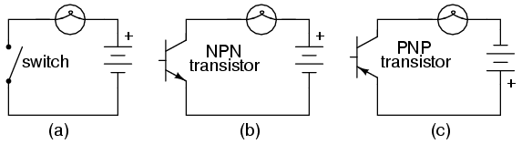
(a) mechanical switch, (b) NPN transistor switch, (c) PNP transistor switch.
A PNP transistor could also have been chosen for the job. Its application is shown in Figure above(c).
The choice between NPN and PNP is really arbitrary. All that matters is that the proper current directions are maintained for the sake of correct junction biasing (electron flow going against the transistor symbol's arrow).
Going back to the NPN transistor in our example circuit, we are faced with the need to add something more so that we can have base current. Without a connection to the base wire of the transistor, base current will be zero, and the transistor cannot turn on, resulting in a lamp that is always off. Remember that for an NPN transistor, base current must consist of electrons flowing from emitter to base (against the emitter arrow symbol, just like the lamp current). Perhaps the simplest thing to do would be to connect a switch between the base and collector wires of the transistor as in Figure below (a).
Transistor: (a) cutoff, lamp off; (b) saturated, lamp on.
If the switch is open as in Figure above (a), the base wire of the transistor will be left “floating” (not connected to anything) and there will be no current through it. In this state, the transistor is said to be cutoff. If the switch is closed as in Figure above (b), electrons will be able to flow from the emitter through to the base of the transistor, through the switch, up to the left side of the lamp, back to the positive side of the battery. This base current will enable a much larger flow of electrons from the emitter through to the collector, thus lighting up the lamp. In this state of maximum circuit current, the transistor is said to be saturated.
Of course, it may seem pointless to use a transistor in this capacity to control the lamp. After all, we're still using a switch in the circuit, aren't we? If we're still using a switch to control the lamp -- if only indirectly -- then what's the point of having a transistor to control the current? Why not just go back to our original circuit and use the switch directly to control the lamp current?
Two points can be made here, actually. First is the fact that when used in this manner, the switch contacts need only handle what little base current is necessary to turn the transistor on; the transistor itself handles most of the lamp's current. This may be an important advantage if the switch has a low current rating: a small switch may be used to control a relatively high-current load. More importantly, the current-controlling behavior of the transistor enables us to use something completely different to turn the lamp on or off. Consider Figure below, where a pair of solar cells provides 1 V to overcome the 0.7 VBE of the transistor to cause base current flow, which in turn controls the lamp.
Solar cell serves as light sensor.
Or, we could use a thermocouple (many connected in series) to provide the necessary base current to turn the transistor on in Figure below.

A single thermocouple provides less than 40 mV. Many in series could produce in excess of the 0.7 V transistor VBE to cause base current flow and consequent collector current to the lamp.
Even a microphone (Figure below) with enough voltage and current (from an amplifier) output could turn the transistor on, provided its output is rectified from AC to DC so that the emitter-base PN junction within the transistor will always be forward-biased:

Amplified microphone signal is rectified to DC to bias the base of the transistor providing a larger collector current.
The point should be quite apparent by now: any sufficient source of DC current may be used to turn the transistor on, and that source of current only need be a fraction of the current needed to energize the lamp. Here we see the transistor functioning not only as a switch, but as a true amplifier: using a relatively low-power signal to control a relatively large amount of power. Please note that the actual power for lighting up the lamp comes from the battery to the right of the schematic. It is not as though the small signal current from the solar cell, thermocouple, or microphone is being magically transformed into a greater amount of power. Rather, those small power sources are simply controlling the battery's power to light up the lamp.
Bipolar transistors are constructed of a three-layer semiconductor “sandwich,” either PNP or NPN. As such, transistors register as two diodes connected back-to-back when tested with a multimeter's “resistance” or “diode check” function as illustrated in Figure below. Low resistance readings on the base with the black negative (-) leads correspond to an N-type material in the base of a PNP transistor. On the symbol, the N-type material is "pointed" to by the arrow of the base-emitter junction, which is the base for this example. The P-type emitter corresponds to the other end of the arrow of the base-emitter junction, the emitter. The collector is very similar to the emitter, and is also a P-type material of the PN junction.

PNP transistor meter check: (a) forward B-E, B-C, resistance is low; (b) reverse B-E, B-C, resistance is ∞.
Here I'm assuming the use of a multimeter with only a single continuity range (resistance) function to check the PN junctions. Some multimeters are equipped with two separate continuity check functions: resistance and “diode check,” each with its own purpose. If your meter has a designated “diode check” function, use that rather than the “resistance” range, and the meter will display the actual forward voltage of the PN junction and not just whether or not it conducts current.
Meter readings will be exactly opposite, of course, for an NPN transistor, with both PN junctions facing the other way. Low resistance readings with the red (+) lead on the base is the “opposite” condition for the NPN transistor.
If a multimeter with a “diode check” function is used in this test, it will be found that the emitter-base junction possesses a slightly greater forward voltage drop than the collector-base junction. This forward voltage difference is due to the disparity in doping concentration between the emitter and collector regions of the transistor: the emitter is a much more heavily doped piece of semiconductor material than the collector, causing its junction with the base to produce a higher forward voltage drop.
Knowing this, it becomes possible to determine which wire is which on an unmarked transistor. This is important because transistor packaging, unfortunately, is not standardized. All bipolar transistors have three wires, of course, but the positions of the three wires on the actual physical package are not arranged in any universal, standardized order.
Suppose a technician finds a bipolar transistor and proceeds to measure continuity with a multimeter set in the “diode check” mode. Measuring between pairs of wires and recording the values displayed by the meter, the technician obtains the data in Figure below.
|
|
Unknown bipolar transistor. Which terminals are emitter, base, and collector? Ω-meter readings between terminals.
The only combinations of test points giving conducting meter readings are wires 1 and 3 (red test lead on 1 and black test lead on 3), and wires 2 and 3 (red test lead on 2 and black test lead on 3). These two readings must indicate forward biasing of the emitter-to-base junction (0.655 volts) and the collector-to-base junction (0.621 volts).
Now we look for the one wire common to both sets of conductive readings. It must be the base connection of the transistor, because the base is the only layer of the three-layer device common to both sets of PN junctions (emitter-base and collector-base). In this example, that wire is number 3, being common to both the 1-3 and the 2-3 test point combinations. In both those sets of meter readings, the black (-) meter test lead was touching wire 3, which tells us that the base of this transistor is made of N-type semiconductor material (black = negative). Thus, the transistor is a PNP with base on wire 3, emitter on wire 1 and collector on wire 2 as described in Figure below.
|
|
BJT terminals identified by Ω-meter.
Please note that the base wire in this example is not the middle lead of the transistor, as one might expect from the three-layer “sandwich” model of a bipolar transistor. This is quite often the case, and tends to confuse new students of electronics. The only way to be sure which lead is which is by a meter check, or by referencing the manufacturer's “data sheet” documentation on that particular part number of transistor.
Knowing that a bipolar transistor behaves as two back-to-back diodes when tested with a conductivity meter is helpful for identifying an unknown transistor purely by meter readings. It is also helpful for a quick functional check of the transistor. If the technician were to measure continuity in any more than two or any less than two of the six test lead combinations, he or she would immediately know that the transistor was defective (or else that it wasn't a bipolar transistor but rather something else -- a distinct possibility if no part numbers can be referenced for sure identification!). However, the “two diode” model of the transistor fails to explain how or why it acts as an amplifying device.
To better illustrate this paradox, let's examine one of the transistor switch circuits using the physical diagram in Figure below rather than the schematic symbol to represent the transistor. This way the two PN junctions will be easier to see.
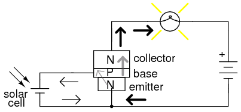
A small base current flowing in the forward biased base-emitter junction allows a large current flow through the reverse biased base-collector junction.
A grey-colored diagonal arrow shows the direction of electron flow through the emitter-base junction. This part makes sense, since the electrons are flowing from the N-type emitter to the P-type base: the junction is obviously forward-biased. However, the base-collector junction is another matter entirely. Notice how the grey-colored thick arrow is pointing in the direction of electron flow (up-wards) from base to collector. With the base made of P-type material and the collector of N-type material, this direction of electron flow is clearly backwards to the direction normally associated with a PN junction! A normal PN junction wouldn't permit this “backward” direction of flow, at least not without offering significant opposition. However, a saturated transistor shows very little opposition to electrons, all the way from emitter to collector, as evidenced by the lamp's illumination!
Clearly then, something is going on here that defies the simple “two-diode” explanatory model of the bipolar transistor. When I was first learning about transistor operation, I tried to construct my own transistor from two back-to-back diodes, as in Figure below.
A pair of back-to-back diodes don't act like a transistor!
My circuit didn't work, and I was mystified. However useful the “two diode” description of a transistor might be for testing purposes, it doesn't explain how a transistor behaves as a controlled switch.
What happens in a transistor is this: the reverse bias of the base-collector junction prevents collector current when the transistor is in cutoff mode (that is, when there is no base current). If the base-emitter junction is forward biased by the controlling signal, the normally-blocking action of the base-collector junction is overridden and current is permitted through the collector, despite the fact that electrons are going the “wrong way” through that PN junction. This action is dependent on the quantum physics of semiconductor junctions, and can only take place when the two junctions are properly spaced and the doping concentrations of the three layers are properly proportioned. Two diodes wired in series fail to meet these criteria; the top diode can never “turn on” when it is reversed biased, no matter how much current goes through the bottom diode in the base wire loop. See Bipolar junction transistors, Ch 2 for more details.
That doping concentrations play a crucial part in the special abilities of the transistor is further evidenced by the fact that collector and emitter are not interchangeable. If the transistor is merely viewed as two back-to-back PN junctions, or merely as a plain N-P-N or P-N-P sandwich of materials, it may seem as though either end of the transistor could serve as collector or emitter. This, however, is not true. If connected “backwards” in a circuit, a base-collector current will fail to control current between collector and emitter. Despite the fact that both the emitter and collector layers of a bipolar transistor are of the same doping type (either N or P), collector and emitter are definitely not identical!
Current through the emitter-base junction allows current through the reverse-biased base-collector junction. The action of base current can be thought of as “opening a gate” for current through the collector. More specifically, any given amount of emitter-to-base current permits a limited amount of base-to-collector current. For every electron that passes through the emitter-base junction and on through the base wire, a certain, number of electrons pass through the base-collector junction and no more.
In the next section, this current-limiting of the transistor will be investigated in more detail.
When a transistor is in the fully-off state (like an open switch), it is said to be cutoff. Conversely, when it is fully conductive between emitter and collector (passing as much current through the collector as the collector power supply and load will allow), it is said to be saturated. These are the two modes of operation explored thus far in using the transistor as a switch.
However, bipolar transistors don't have to be restricted to these two extreme modes of operation. As we learned in the previous section, base current “opens a gate” for a limited amount of current through the collector. If this limit for the controlled current is greater than zero but less than the maximum allowed by the power supply and load circuit, the transistor will “throttle” the collector current in a mode somewhere between cutoff and saturation. This mode of operation is called the active mode.
An automotive analogy for transistor operation is as follows: cutoff is the condition of no motive force generated by the mechanical parts of the car to make it move. In cutoff mode, the brake is engaged (zero base current), preventing motion (collector current). Active mode is the automobile cruising at a constant, controlled speed (constant, controlled collector current) as dictated by the driver. Saturation the automobile driving up a steep hill that prevents it from going as fast as the driver wishes. In other words, a “saturated” automobile is one with the accelerator pedal pushed all the way down (base current calling for more collector current than can be provided by the power supply/load circuit).
Let's set up a circuit for SPICE simulation to demonstrate what happens when a transistor is in its active mode of operation. (Figure below)
|
bipolar transistor simulation i1 0 1 dc 20u q1 2 1 0 mod1 vammeter 3 2 dc 0 v1 3 0 dc .model mod1 npn .dc v1 0 2 0.05 .plot dc i(vammeter) .end |
Circuit for “active mode” SPICE simulation, and netlist.
“Q” is the standard letter designation for a transistor in a schematic diagram, just as “R” is for resistor and “C” is for capacitor. In this circuit, we have an NPN transistor powered by a battery (V1) and controlled by current through a current source (I1). A current source is a device that outputs a specific amount of current, generating as much or as little voltage across its terminals to ensure that exact amount of current through it. Current sources are notoriously difficult to find in nature (unlike voltage sources, which by contrast attempt to maintain a constant voltage, outputting as much or as little current in the fulfillment of that task), but can be simulated with a small collection of electronic components. As we are about to see, transistors themselves tend to mimic the constant-current behavior of a current source in their ability to regulate current at a fixed value.
In the SPICE simulation, we'll set the current source at a constant value of 20 µA, then vary the voltage source (V1) over a range of 0 to 2 volts and monitor how much current goes through it. The “dummy” battery (Vammeter) in Figure above with its output of 0 volts serves merely to provide SPICE with a circuit element for current measurement.
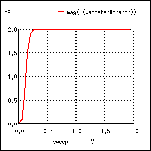
A Sweeping collector voltage 0 to 2 V with base current constant at 20 µA yields constant 2 mA collector current in the saturation region.
The constant base current of 20 µA sets a collector current limit of 2 mA, exactly 100 times as much. Notice how flat the curve is in (Figure above) for collector current over the range of battery voltage from 0 to 2 volts. The only exception to this featureless plot is at the very beginning, where the battery increases from 0 volts to 0.25 volts. There, the collector current increases rapidly from 0 amps to its limit of 2 mA.
Let's see what happens if we vary the battery voltage over a wider range, this time from 0 to 50 volts. We'll keep the base current steady at 20 µA. (Figure below)
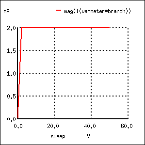 |
bipolar transistor simulation i1 0 1 dc 20u q1 2 1 0 mod1 vammeter 3 2 dc 0 v1 3 0 dc .model mod1 npn .dc v1 0 50 2 .plot dc i(vammeter) .end |
Sweeping collector voltage 0 to 50 V with base current constant at 20 µA yields constant 2 mA collector current.
Same result! The collector current in Figure above holds absolutely steady at 2 mA, although the battery (v1) voltage varies all the way from 0 to 50 volts. It would appear from our simulation that collector-to-emitter voltage has little effect over collector current, except at very low levels (just above 0 volts). The transistor is acting as a current regulator, allowing exactly 2 mA through the collector and no more.
Now let's see what happens if we increase the controlling (I1) current from 20 µA to 75 µA, once again sweeping the battery (V1) voltage from 0 to 50 volts and graphing the collector current in Figure below.
|
bipolar transistor simulation i1 0 1 dc 75u q1 2 1 0 mod1 vammeter 3 2 dc 0 v1 3 0 dc .model mod1 npn .dc v1 0 50 2 i1 15u 75u 15u .plot dc i(vammeter) .end |
Sweeping collector voltage 0 to 50 V (.dc v1 0 50 2) with base current constant at 75 µA yields constant 7.5 mA collector current. Other curves are generated by current sweep (i1 15u 75u 15u) in DC analysis statement (.dc v1 0 50 2 i1 15u 75u 15u).
Not surprisingly, SPICE gives us a similar plot: a flat line, holding steady this time at 7.5 mA -- exactly 100 times the base current -- over the range of battery voltages from just above 0 volts to 50 volts. It appears that the base current is the deciding factor for collector current, the V1 battery voltage being irrelevant as long as it is above a certain minimum level.
This voltage/current relationship is entirely different from what we're used to seeing across a resistor. With a resistor, current increases linearly as the voltage across it increases. Here, with a transistor, current from emitter to collector stays limited at a fixed, maximum value no matter how high the voltage across emitter and collector increases.
Often it is useful to superimpose several collector current/voltage graphs for different base currents on the same graph as in Figure below. A collection of curves like this -- one curve plotted for each distinct level of base current -- for a particular transistor is called the transistor's characteristic curves:

Voltage collector to emitter vs collector current for various base currents.
Each curve on the graph reflects the collector current of the transistor, plotted over a range of collector-to-emitter voltages, for a given amount of base current. Since a transistor tends to act as a current regulator, limiting collector current to a proportion set by the base current, it is useful to express this proportion as a standard transistor performance measure. Specifically, the ratio of collector current to base current is known as the Beta ratio (symbolized by the Greek letter β):
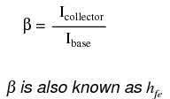
Sometimes the β ratio is designated as “hfe,” a label used in a branch of mathematical semiconductor analysis known as “hybrid parameters” which strives to achieve precise predictions of transistor performance with detailed equations. Hybrid parameter variables are many, but each is labeled with the general letter “h” and a specific subscript. The variable “hfe” is just another (standardized) way of expressing the ratio of collector current to base current, and is interchangeable with “β.” The β ratio is unitless.
β for any transistor is determined by its design: it cannot be altered after manufacture. It is rare to have two transistors of the same design exactly match because of the physical variables afecting β . If a circuit design relies on equal β ratios between multiple transistors, “matched sets” of transistors may be purchased at extra cost. However, it is generally considered bad design practice to engineer circuits with such dependencies.
The β of a transistor does not remain stable for all operating conditions. For an actual transistor, the β ratio may vary by a factor of over 3 within its operating current limits. For example, a transistor with advertised β of 50 may actually test with Ic/Ib ratios as low as 30 and as high as 100, depending on the amount of collector current, the transistor's temperature, and frequency of amplified signal, among other factors. For tutorial purposes it is adequate to assume a constant β for any given transistor; realize that real life is not that simple!
Sometimes it is helpful for comprehension to “model” complex electronic components with a collection of simpler, better-understood components. The model in Figure below is used in many introductory electronics texts.

Elementary diode resistor transistor model.
This model casts the transistor as a combination of diode and rheostat (variable resistor). Current through the base-emitter diode controls the resistance of the collector-emitter rheostat (as implied by the dashed line connecting the two components), thus controlling collector current. An NPN transistor is modeled in the figure shown, but a PNP transistor would be only slightly different (only the base-emitter diode would be reversed). This model succeeds in illustrating the basic concept of transistor amplification: how the base current signal can exert control over the collector current. However, I don't like this model because it miscommunicates the notion of a set amount of collector-emitter resistance for a given amount of base current. If this were true, the transistor wouldn't regulate collector current at all like the characteristic curves show. Instead of the collector current curves flattening out after their brief rise as the collector-emitter voltage increases, the collector current would be directly proportional to collector-emitter voltage, rising steadily in a straight line on the graph.
A better transistor model, often seen in more advanced textbooks, is shown in Figure below.
Current source model of transistor.
It casts the transistor as a combination of diode and current source, the output of the current source being set at a multiple (β ratio) of the base current. This model is far more accurate in depicting the true input/output characteristics of a transistor: base current establishes a certain amount of collector current, rather than a certain amount of collector-emitter resistance as the first model implies. Also, this model is favored when performing network analysis on transistor circuits, the current source being a well-understood theoretical component. Unfortunately, using a current source to model the transistor's current-controlling behavior can be misleading: in no way will the transistor ever act as a source of electrical energy. The current source does not model the fact that its source of energy is a external power supply, similar to an amplifier.
At the beginning of this chapter we saw how transistors could be used as switches, operating in either their “saturation” or “cutoff” modes. In the last section we saw how transistors behave within their “active” modes, between the far limits of saturation and cutoff. Because transistors are able to control current in an analog (infinitely divisible) fashion, they find use as amplifiers for analog signals.
One of the simpler transistor amplifier circuits to study previously illustrated the transistor's switching ability. (Figure below)
NPN transistor as a simple switch.
It is called the common-emitter configuration because (ignoring the power supply battery) both the signal source and the load share the emitter lead as a common connection point shown in Figure below. This is not the only way in which a transistor may be used as an amplifier, as we will see in later sections of this chapter.

Common-emitter amplifier: The input and output signals both share a connection to the emitter.
Before, a small solar cell current saturated a transistor, illuminating a lamp. Knowing now that transistors are able to “throttle” their collector currents according to the amount of base current supplied by an input signal source, we should see that the brightness of the lamp in this circuit is controllable by the solar cell's light exposure. When there is just a little light shone on the solar cell, the lamp will glow dimly. The lamp's brightness will steadily increase as more light falls on the solar cell.
Suppose that we were interested in using the solar cell as a light intensity instrument. We want to measure the intensity of incident light with the solar cell by using its output current to drive a meter movement. It is possible to directly connect a meter movement to a solar cell (Figure below) for this purpose. In fact, the simplest light-exposure meters for photography work are designed like this.
High intensity light directly drives light meter.
Although this approach might work for moderate light intensity measurements, it would not work as well for low light intensity measurements. Because the solar cell has to supply the meter movement's power needs, the system is necessarily limited in its sensitivity. Supposing that our need here is to measure very low-level light intensities, we are pressed to find another solution.
Perhaps the most direct solution to this measurement problem is to use a transistor (Figure below) to amplify the solar cell's current so that more meter deflection may be obtained for less incident light.
Cell current must be amplified for low intensity light.
Current through the meter movement in this circuit will be β times the solar cell current. With a transistor β of 100, this represents a substantial increase in measurement sensitivity. It is prudent to point out that the additional power to move the meter needle comes from the battery on the far right of the circuit, not the solar cell itself. All the solar cell's current does is control battery current to the meter to provide a greater meter reading than the solar cell could provide unaided.
Because the transistor is a current-regulating device, and because meter movement indications are based on the current through the movement coil, meter indication in this circuit should depend only on the current from the solar cell, not on the amount of voltage provided by the battery. This means the accuracy of the circuit will be independent of battery condition, a significant feature! All that is required of the battery is a certain minimum voltage and current output ability to drive the meter full-scale.
Another way in which the common-emitter configuration may be used is to produce an output voltage derived from the input signal, rather than a specific output current. Let's replace the meter movement with a plain resistor and measure voltage between collector and emitter in Figure below

Common emitter amplifier develops voltage output due to current through load resistor.
With the solar cell darkened (no current), the transistor will be in cutoff mode and behave as an open switch between collector and emitter. This will produce maximum voltage drop between collector and emitter for maximum Voutput, equal to the full voltage of the battery.
At full power (maximum light exposure), the solar cell will drive the transistor into saturation mode, making it behave like a closed switch between collector and emitter. The result will be minimum voltage drop between collector and emitter, or almost zero output voltage. In actuality, a saturated transistor can never achieve zero voltage drop between collector and emitter because of the two PN junctions through which collector current must travel. However, this “collector-emitter saturation voltage” will be fairly low, around several tenths of a volt, depending on the specific transistor used.
For light exposure levels somewhere between zero and maximum solar cell output, the transistor will be in its active mode, and the output voltage will be somewhere between zero and full battery voltage. An important quality to note here about the common-emitter configuration is that the output voltage is inverted with respect to the input signal. That is, the output voltage decreases as the input signal increases. For this reason, the common-emitter amplifier configuration is referred to as an inverting amplifier.
A quick SPICE simulation (Figure below) of the circuit in Figure below will verify our qualitative conclusions about this amplifier circuit.
|
*common-emitter amplifier i1 0 1 dc q1 2 1 0 mod1 r 3 2 5000 v1 3 0 dc 15 .model mod1 npn .dc i1 0 50u 2u .plot dc v(2,0) .end |
Common emitter schematic with node numbers and corresponding SPICE netlist.

Common emitter: collector voltage output vs base current input.
At the beginning of the simulation in Figure above where the current source (solar cell) is outputting zero current, the transistor is in cutoff mode and the full 15 volts from the battery is shown at the amplifier output (between nodes 2 and 0). As the solar cell's current begins to increase, the output voltage proportionally decreases, until the transistor reaches saturation at 30 µA of base current (3 mA of collector current). Notice how the output voltage trace on the graph is perfectly linear (1 volt steps from 15 volts to 1 volt) until the point of saturation, where it never quite reaches zero. This is the effect mentioned earlier, where a saturated transistor can never achieve exactly zero voltage drop between collector and emitter due to internal junction effects. What we do see is a sharp output voltage decrease from 1 volt to 0.2261 volts as the input current increases from 28 µA to 30 µA, and then a continuing decrease in output voltage from then on (albeit in progressively smaller steps). The lowest the output voltage ever gets in this simulation is 0.1299 volts, asymptotically approaching zero.
So far, we've seen the transistor used as an amplifier for DC signals. In the solar cell light meter example, we were interested in amplifying the DC output of the solar cell to drive a DC meter movement, or to produce a DC output voltage. However, this is not the only way in which a transistor may be employed as an amplifier. Often an AC amplifier for amplifying alternating current and voltage signals is desired. One common application of this is in audio electronics (radios, televisions, and public-address systems). Earlier, we saw an example of the audio output of a tuning fork activating a transistor switch. (Figure below) Let's see if we can modify that circuit to send power to a speaker rather than to a lamp in Figure below.
Transistor switch activated by audio.
In the original circuit, a full-wave bridge rectifier was used to convert the microphone's AC output signal into a DC voltage to drive the input of the transistor. All we cared about here was turning the lamp on with a sound signal from the microphone, and this arrangement sufficed for that purpose. But now we want to actually reproduce the AC signal and drive a speaker. This means we cannot rectify the microphone's output anymore, because we need undistorted AC signal to drive the transistor! Let's remove the bridge rectifier and replace the lamp with a speaker:
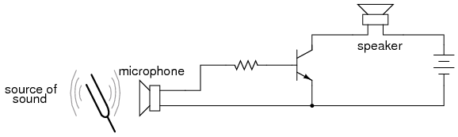
Common emitter amplifier drives speaker with audio frequency signal.
Since the microphone may produce voltages exceeding the forward voltage drop of the base-emitter PN (diode) junction, I've placed a resistor in series with the microphone. Let's simulate the circuit in Figure below with SPICE. The netlist is included in (Figure below)

SPICE version of common emitter audio amplifier.
|
common-emitter amplifier vinput 1 0 sin (0 1.5 2000 0 0) r1 1 2 1k q1 3 2 0 mod1 rspkr 3 4 8 v1 4 0 dc 15 .model mod1 npn .tran 0.02m 0.74m .plot tran v(1,0) i(v1) .end |
Signal clipped at collector due to lack of DC base bias.
The simulation plots (Figure above) both the input voltage (an AC signal of 1.5 volt peak amplitude and 2000 Hz frequency) and the current through the 15 volt battery, which is the same as the current through the speaker. What we see here is a full AC sine wave alternating in both positive and negative directions, and a half-wave output current waveform that only pulses in one direction. If we were actually driving a speaker with this waveform, the sound produced would be horribly distorted.
What's wrong with the circuit? Why won't it faithfully reproduce the entire AC waveform from the microphone? The answer to this question is found by close inspection of the transistor diode current source model in Figure below.
The model shows that base current flow in on direction.
Collector current is controlled, or regulated, through the constant-current mechanism according to the pace set by the current through the base-emitter diode. Note that both current paths through the transistor are monodirectional: one way only! Despite our intent to use the transistor to amplify an AC signal, it is essentially a DC device, capable of handling currents in a single direction. We may apply an AC voltage input signal between the base and emitter, but electrons cannot flow in that circuit during the part of the cycle that reverse-biases the base-emitter diode junction. Therefore, the transistor will remain in cutoff mode throughout that portion of the cycle. It will “turn on” in its active mode only when the input voltage is of the correct polarity to forward-bias the base-emitter diode, and only when that voltage is sufficiently high to overcome the diode's forward voltage drop. Remember that bipolar transistors are current-controlled devices: they regulate collector current based on the existence of base-to-emitter current, not base-to-emitter voltage.
The only way we can get the transistor to reproduce the entire waveform as current through the speaker is to keep the transistor in its active mode the entire time. This means we must maintain current through the base during the entire input waveform cycle. Consequently, the base-emitter diode junction must be kept forward-biased at all times. Fortunately, this can be accomplished with a DC bias voltage added to the input signal. By connecting a sufficient DC voltage in series with the AC signal source, forward-bias can be maintained at all points throughout the wave cycle. (Figure below)

Vbias keeps transistor in the active region.
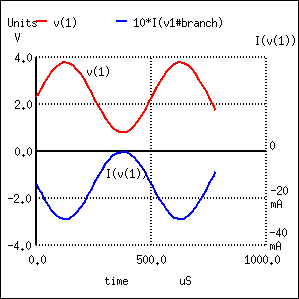 |
common-emitter amplifier vinput 1 5 sin (0 1.5 2000 0 0) vbias 5 0 dc 2.3 r1 1 2 1k q1 3 2 0 mod1 rspkr 3 4 8 v1 4 0 dc 15 .model mod1 npn .tran 0.02m 0.78m .plot tran v(1,0) i(v1) .end |
Undistorted output current I(v(1) due to Vbias
With the bias voltage source of 2.3 volts in place, the transistor remains in its active mode throughout the entire cycle of the wave, faithfully reproducing the waveform at the speaker. (Figure above) Notice that the input voltage (measured between nodes 1 and 0) fluctuates between about 0.8 volts and 3.8 volts, a peak-to-peak voltage of 3 volts just as expected (source voltage = 1.5 volts peak). The output (speaker) current varies between zero and almost 300 mA, 180o out of phase with the input (microphone) signal.
The illustration in Figure below is another view of the same circuit, this time with a few oscilloscopes (“scopemeters”) connected at crucial points to display all the pertinent signals.

Input is biased upward at base. Output is inverted.
The need for biasing a transistor amplifier circuit to obtain full waveform reproduction is an important consideration. A separate section of this chapter will be devoted entirely to the subject biasing and biasing techniques. For now, it is enough to understand that biasing may be necessary for proper voltage and current output from the amplifier.
Now that we have a functioning amplifier circuit, we can investigate its voltage, current, and power gains. The generic transistor used in these SPICE analyses has a β of 100, as indicated by the short transistor statistics printout included in the text output in Table below (these statistics were cut from the last two analyses for brevity's sake).
BJT SPICE model parameters.
type npn is 1.00E-16 bf 100.000 nf 1.000 br 1.000 nr 1.000
β is listed under the abbreviation “bf,” which actually stands for “beta, forward”. If we wanted to insert our own β ratio for an analysis, we could have done so on the .model line of the SPICE netlist.
Since β is the ratio of collector current to base current, and we have our load connected in series with the collector terminal of the transistor and our source connected in series with the base, the ratio of output current to input current is equal to beta. Thus, our current gain for this example amplifier is 100, or 40 dB.
Voltage gain is a little more complicated to figure than current gain for this circuit. As always, voltage gain is defined as the ratio of output voltage divided by input voltage. In order to experimentally determine this, we modify our last SPICE analysis to plot output voltage rather than output current so we have two voltage plots to compare in Figure below.
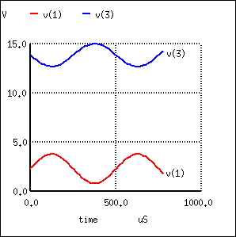 |
common-emitter amplifier vinput 1 5 sin (0 1.5 2000 0 0) vbias 5 0 dc 2.3 r1 1 2 1k q1 3 2 0 mod1 rspkr 3 4 8 v1 4 0 dc 15 .model mod1 npn .tran 0.02m 0.78m .plot tran v(1,0) v(3) .end |
V(3), the output voltage across rspkr, compared to the input.
Plotted on the same scale (from 0 to 4 volts), we see that the output waveform in Figure above has a smaller peak-to-peak amplitude than the input waveform , in addition to being at a lower bias voltage, not elevated up from 0 volts like the input. Since voltage gain for an AC amplifier is defined by the ratio of AC amplitudes, we can ignore any DC bias separating the two waveforms. Even so, the input waveform is still larger than the output, which tells us that the voltage gain is less than 1 (a negative dB figure).
To be honest, this low voltage gain is not characteristic to all common-emitter amplifiers. It is a consequence of the great disparity between the input and load resistances. Our input resistance (R1) here is 1000 Ω, while the load (speaker) is only 8 Ω. Because the current gain of this amplifier is determined solely by the β of the transistor, and because that β figure is fixed, the current gain for this amplifier won't change with variations in either of these resistances. However, voltage gain is dependent on these resistances. If we alter the load resistance, making it a larger value, it will drop a proportionately greater voltage for its range of load currents, resulting in a larger output waveform. Let's try another simulation, only this time with a 30 Ω in Figure below load instead of an 8 Ω load.
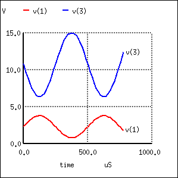 |
common-emitter amplifier vinput 1 5 sin (0 1.5 2000 0 0) vbias 5 0 dc 2.3 r1 1 2 1k q1 3 2 0 mod1 rspkr 3 4 30 v1 4 0 dc 15 .model mod1 npn .tran 0.02m 0.78m .plot tran v(1,0) v(3) .end |
Increasing rspkr to 30 Ω increases the output voltage.
This time the output voltage waveform in Figure above is significantly greater in amplitude than the input waveform. Looking closely, we can see that the output waveform crests between 0 and about 9 volts: approximately 3 times the amplitude of the input voltage.
We can do another computer analysis of this circuit, this time instructing SPICE to analyze it from an AC point of view, giving us peak voltage figures for input and output instead of a time-based plot of the waveforms. (Table below)
SPICE netlist for printing AC input and output voltages.
common-emitter amplifier vinput 1 5 ac 1.5 vbias 5 0 dc 2.3 r1 1 2 1k q1 3 2 0 mod1 rspkr 3 4 30 v1 4 0 dc 15 .model mod1 npn .ac lin 1 2000 2000 .print ac v(1,0) v(4,3) .end freq v(1) v(4,3) 2.000E+03 1.500E+00 4.418E+00
Peak voltage measurements of input and output show an input of 1.5 volts and an output of 4.418 volts. This gives us a voltage gain ratio of 2.9453 (4.418 V / 1.5 V), or 9.3827 dB.

Because the current gain of the common-emitter amplifier is fixed by β, and since the input and output voltages will be equal to the input and output currents multiplied by their respective resistors, we can derive an equation for approximate voltage gain:
As you can see, the predicted results for voltage gain are quite close to the simulated results. With perfectly linear transistor behavior, the two sets of figures would exactly match. SPICE does a reasonable job of accounting for the many “quirks” of bipolar transistor function in its analysis, hence the slight mismatch in voltage gain based on SPICE's output.
These voltage gains remain the same regardless of where we measure output voltage in the circuit: across collector and emitter, or across the series load resistor as we did in the last analysis. The amount of output voltage change for any given amount of input voltage will remain the same. Consider the two following SPICE analyses as proof of this. The first simulation in Figure below is time-based, to provide a plot of input and output voltages. You will notice that the two signals are 180o out of phase with each other. The second simulation in Table below is an AC analysis, to provide simple, peak voltage readings for input and output.
|
common-emitter amplifier vinput 1 5 sin (0 1.5 2000 0 0) vbias 5 0 dc 2.3 r1 1 2 1k q1 3 2 0 mod1 rspkr 3 4 30 v1 4 0 dc 15 .model mod1 npn .tran 0.02m 0.74m .plot tran v(1,0) v(3,0) .end |
Common-emitter amplifier shows a voltage gain with Rspkr=30Ω
SPICE netlist for AC analysis
common-emitter amplifier vinput 1 5 ac 1.5 vbias 5 0 dc 2.3 r1 1 2 1k q1 3 2 0 mod1 rspkr 3 4 30 v1 4 0 dc 15 .model mod1 npn .ac lin 1 2000 2000 .print ac v(1,0) v(3,0) .end freq v(1) v(3) 2.000E+03 1.500E+00 4.418E+00
We still have a peak output voltage of 4.418 volts with a peak input voltage of 1.5 volts. The only difference from the last set of simulations is the phase of the output voltage.
So far, the example circuits shown in this section have all used NPN transistors. PNP transistors are just as valid to use as NPN in any amplifier configuration, as long as the proper polarity and current directions are maintained, and the common-emitter amplifier is no exception. The output invertion and gain of a PNP transistor amplifier are the same as its NPN counterpart, just the battery polarities are different. (Figure below)

PNP version of common emitter amplifier.

Our next transistor configuration to study is a bit simpler for gain calculations. Called the common-collector configuration, its schematic diagram is shown in Figure below.

Common collector amplifier has collector common to both input and output.
It is called the common-collector configuration because (ignoring the power supply battery) both the signal source and the load share the collector lead as a common connection point as in Figure below.

Common collector: Input is applied to base and collector. Output is from emitter-collector circuit.
It should be apparent that the load resistor in the common-collector amplifier circuit receives both the base and collector currents, being placed in series with the emitter. Since the emitter lead of a transistor is the one handling the most current (the sum of base and collector currents, since base and collector currents always mesh together to form the emitter current), it would be reasonable to presume that this amplifier will have a very large current gain. This presumption is indeed correct: the current gain for a common-collector amplifier is quite large, larger than any other transistor amplifier configuration. However, this is not necessarily what sets it apart from other amplifier designs.
Let's proceed immediately to a SPICE analysis of this amplifier circuit, and you will be able to immediately see what is unique about this amplifier. The circuit is in Figure below. The netlist is in Figure below.
Common collector amplifier for SPICE.
|
common-collector amplifier vin 1 0 q1 2 1 3 mod1 v1 2 0 dc 15 rload 3 0 5k .model mod1 npn .dc vin 0 5 0.2 .plot dc v(3,0) .end |
Common collector: Output equals input less a 0.7 V VBE drop.
Unlike the common-emitter amplifier from the previous section, the common-collector produces an output voltage in direct rather than inverse proportion to the rising input voltage. See Figure above. As the input voltage increases, so does the output voltage. Moreover, a close examination reveals that the output voltage is nearly identical to the input voltage, lagging behind by about 0.7 volts.
This is the unique quality of the common-collector amplifier: an output voltage that is nearly equal to the input voltage. Examined from the perspective of output voltage change for a given amount of input voltage change, this amplifier has a voltage gain of almost exactly unity (1), or 0 dB. This holds true for transistors of any β value, and for load resistors of any resistance value.
It is simple to understand why the output voltage of a common-collector amplifier is always nearly equal to the input voltage. Referring to the diode current source transistor model in Figure below, we see that the base current must go through the base-emitter PN junction, which is equivalent to a normal rectifying diode. If this junction is forward-biased (the transistor conducting current in either its active or saturated modes), it will have a voltage drop of approximately 0.7 volts, assuming silicon construction. This 0.7 volt drop is largely irrespective of the actual magnitude of base current; thus, we can regard it as being constant:

Emitter follower: Emitter voltage follows base voltage (less a 0.7 V VBE drop.)
Given the voltage polarities across the base-emitter PN junction and the load resistor, we see that these must add together to equal the input voltage, in accordance with Kirchhoff's Voltage Law. In other words, the load voltage will always be about 0.7 volts less than the input voltage for all conditions where the transistor is conducting. Cutoff occurs at input voltages below 0.7 volts, and saturation at input voltages in excess of battery (supply) voltage plus 0.7 volts.
Because of this behavior, the common-collector amplifier circuit is also known as the voltage-follower or emitter-follower amplifier, because the emitter load voltages follow the input so closely.
Applying the common-collector circuit to the amplification of AC signals requires the same input “biasing” used in the common-emitter circuit: a DC voltage must be added to the AC input signal to keep the transistor in its active mode during the entire cycle. When this is done, the result is the non-inverting amplifier in Figure below.
|
common-collector amplifier vin 1 4 sin(0 1.5 2000 0 0) vbias 4 0 dc 2.3 q1 2 1 3 mod1 v1 2 0 dc 15 rload 3 0 5k .model mod1 npn .tran .02m .78m .plot tran v(1,0) v(3,0) .end |
Common collector (emitter-follower) amplifier.
The results of the SPICE simulation in Figure below show that the output follows the input. The output is the same peak-to-peak amplitude as the input. Though, the DC level is shifted downward by one VBE diode drop.

Common collector (emitter-follower): Output V3 follows input V1 less a 0.7 V VBE drop.
Here's another view of the circuit (Figure below) with oscilloscopes connected to several points of interest.
Common collector non-inverting voltage gain is 1.
Since this amplifier configuration doesn't provide any voltage gain (in fact, in practice it actually has a voltage gain of slightly less than 1), its only amplifying factor is current. The common-emitter amplifier configuration examined in the previous section had a current gain equal to the β of the transistor, being that the input current went through the base and the output (load) current went through the collector, and β by definition is the ratio between the collector and base currents. In the common-collector configuration, though, the load is situated in series with the emitter, and thus its current is equal to the emitter current. With the emitter carrying collector current and base current, the load in this type of amplifier has all the current of the collector running through it plus the input current of the base. This yields a current gain of β plus 1:

Once again, PNP transistors are just as valid to use in the common-collector configuration as NPN transistors. The gain calculations are all the same, as is the non-inverting of the amplified signal. The only difference is in voltage polarities and current directions shown in Figure below.

PNP version of the common-collector amplifier.
A popular application of the common-collector amplifier is for regulated DC power supplies, where an unregulated (varying) source of DC voltage is clipped at a specified level to supply regulated (steady) voltage to a load. Of course, zener diodes already provide this function of voltage regulation shown in Figure below.
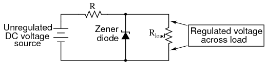
Zener diode voltage regulator.
However, when used in this direct fashion, the amount of current that may be supplied to the load is usually quite limited. In essence, this circuit regulates voltage across the load by keeping current through the series resistor at a high enough level to drop all the excess power source voltage across it, the zener diode drawing more or less current as necessary to keep the voltage across itself steady. For high-current loads, a plain zener diode voltage regulator would have to shunt a heavy current through the diode to be effective at regulating load voltage in the event of large load resistance or voltage source changes.
One popular way to increase the current-handling ability of a regulator circuit like this is to use a common-collector transistor to amplify current to the load, so that the zener diode circuit only has to handle the amount of current necessary to drive the base of the transistor. (Figure below)
Common collector application: voltage regulator.
There's really only one caveat to this approach: the load voltage will be approximately 0.7 volts less than the zener diode voltage, due to the transistor's 0.7 volt base-emitter drop. Since this 0.7 volt difference is fairly constant over a wide range of load currents, a zener diode with a 0.7 volt higher rating can be chosen for the application.
Sometimes the high current gain of a single-transistor, common-collector configuration isn't enough for a particular application. If this is the case, multiple transistors may be staged together in a popular configuration known as a Darlington pair, just an extension of the common-collector concept shown in Figure below.
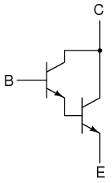
An NPN darlington pair.
Darlington pairs essentially place one transistor as the common-collector load for another transistor, thus multiplying their individual current gains. Base current through the upper-left transistor is amplified through that transistor's emitter, which is directly connected to the base of the lower-right transistor, where the current is again amplified. The overall current gain is as follows:

Voltage gain is still nearly equal to 1 if the entire assembly is connected to a load in common-collector fashion, although the load voltage will be a full 1.4 volts less than the input voltage shown in Figure below.
Darlington pair based common-collector amplifier loses two VBE diode drops.
Darlington pairs may be purchased as discrete units (two transistors in the same package), or may be built up from a pair of individual transistors. Of course, if even more current gain is desired than what may be obtained with a pair, Darlington triplet or quadruplet assemblies may be constructed.
The final transistor amplifier configuration (Figure below) we need to study is the common-base. This configuration is more complex than the other two, and is less common due to its strange operating characteristics.

Common-base amplifier
It is called the common-base configuration because (DC power source aside), the signal source and the load share the base of the transistor as a common connection point shown in Figure below.

Common-base amplifier: Input between emitter and base, output between collector and base.
Perhaps the most striking characteristic of this configuration is that the input signal source must carry the full emitter current of the transistor, as indicated by the heavy arrows in the first illustration. As we know, the emitter current is greater than any other current in the transistor, being the sum of base and collector currents. In the last two amplifier configurations, the signal source was connected to the base lead of the transistor, thus handling the least current possible.
Because the input current exceeds all other currents in the circuit, including the output current, the current gain of this amplifier is actually less than 1 (notice how Rload is connected to the collector, thus carrying slightly less current than the signal source). In other words, it attenuates current rather than amplifying it. With common-emitter and common-collector amplifier configurations, the transistor parameter most closely associated with gain was β. In the common-base circuit, we follow another basic transistor parameter: the ratio between collector current and emitter current, which is a fraction always less than 1. This fractional value for any transistor is called the alpha ratio, or α ratio.
Since it obviously can't boost signal current, it only seems reasonable to expect it to boost signal voltage. A SPICE simulation of the circuit in Figure below will vindicate that assumption.

Common-base circuit for DC SPICE analysis.
|
common-base amplifier vin 0 1 r1 1 2 100 q1 4 0 2 mod1 v1 3 0 dc 15 rload 3 4 5k .model mod1 npn .dc vin 0.6 1.2 .02 .plot dc v(3,4) .end |
Common-base amplifier DC transfer function.
Notice in Figure above that the output voltage goes from practically nothing (cutoff) to 15.75 volts (saturation) with the input voltage being swept over a range of 0.6 volts to 1.2 volts. In fact, the output voltage plot doesn't show a rise until about 0.7 volts at the input, and cuts off (flattens) at about 1.12 volts input. This represents a rather large voltage gain with an output voltage span of 15.75 volts and an input voltage span of only 0.42 volts: a gain ratio of 37.5, or 31.48 dB. Notice also how the output voltage (measured across Rload) actually exceeds the power supply (15 volts) at saturation, due to the series-aiding effect of the input voltage source.
A second set of SPICE analyses (circuit in Figure below) with an AC signal source (and DC bias voltage) tells the same story: a high voltage gain

Common-base circuit for SPICE AC analysis.
As you can see, the input and output waveforms in Figure below are in phase with each other. This tells us that the common-base amplifier is non-inverting.
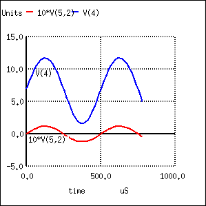 |
common-base amplifier vin 5 2 sin (0 0.12 2000 0 0) vbias 0 1 dc 0.95 r1 2 1 100 q1 4 0 5 mod1 v1 3 0 dc 15 rload 3 4 5k .model mod1 npn .tran 0.02m 0.78m .plot tran v(5,2) v(4) .end |
The AC SPICE analysis in Table below at a single frequency of 2 kHz provides input and output voltages for gain calculation.
Common-base AC analysis at 2 kHz– netlist followed by output.
common-base amplifier vin 5 2 ac 0.1 sin vbias 0 1 dc 0.95 r1 2 1 100 q1 4 0 5 mod1 v1 3 0 dc 15 rload 3 4 5k .model mod1 npn .ac dec 1 2000 2000 .print ac vm(5,2) vm(4,3) .end frequency mag(v(5,2)) mag(v(4,3)) -------------------------------------------- 0.000000e+00 1.000000e-01 4.273864e+00
Voltage figures from the second analysis (Table above) show a voltage gain of 42.74 (4.274 V / 0.1 V), or 32.617 dB:

Here's another view of the circuit in Figure below, summarizing the phase relations and DC offsets of various signals in the circuit just simulated.
Phase relationships and offsets for NPN common base amplifier.
. . . and for a PNP transistor: Figure below.
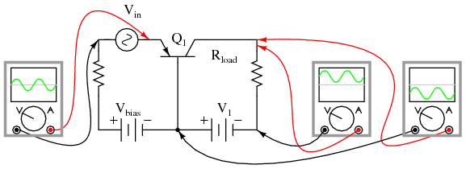
Phase relationships and offsets for PNP common base amplifier.
Predicting voltage gain for the common-base amplifier configuration is quite difficult, and involves approximations of transistor behavior that are difficult to measure directly. Unlike the other amplifier configurations, where voltage gain was either set by the ratio of two resistors (common-emitter), or fixed at an unchangeable value (common-collector), the voltage gain of the common-base amplifier depends largely on the amount of DC bias on the input signal. As it turns out, the internal transistor resistance between emitter and base plays a major role in determining voltage gain, and this resistance changes with different levels of current through the emitter.
While this phenomenon is difficult to explain, it is rather easy to demonstrate through the use of computer simulation. What I'm going to do here is run several SPICE simulations on a common-base amplifier circuit (Figure previous), changing the DC bias voltage slightly (vbias in Figure below ) while keeping the AC signal amplitude and all other circuit parameters constant. As the voltage gain changes from one simulation to another, different output voltage amplitudes will be noted.
Although these analyses will all be conducted in the “transfer function” mode, each was first “proofed” in the transient analysis mode (voltage plotted over time) to ensure that the entire wave was being faithfully reproduced and not “clipped” due to improper biasing. See "*.tran 0.02m 0.78m" in Figure below, the “commented out” transient analysis statement. Gain calculations cannot be based on waveforms that are distorted. SPICE can calculate the small signal DC gain for us with the “.tf v(4) vin” statement. The output is v(4) and the input as vin.
common-base amp vbias=0.85V vin 5 2 sin (0 0.12 2000 0 0) vbias 0 1 dc 0.85 r1 2 1 100 q1 4 0 5 mod1 v1 3 0 dc 15 rload 3 4 5k .model mod1 npn *.tran 0.02m 0.78m .tf v(4) vin .end |
common-base amp current gain Iin 55 5 0A vin 55 2 sin (0 0.12 2000 0 0) vbias 0 1 dc 0.8753 r1 2 1 100 q1 4 0 5 mod1 v1 3 0 dc 15 rload 3 4 5k .model mod1 npn *.tran 0.02m 0.78m .tf I(v1) Iin .end Transfer function information: transfer function = 9.900990e-01 iin input impedance = 9.900923e+11 v1 output impedance = 1.000000e+20 |
SPICE net list: Common-base, transfer function (voltage gain) for various DC bias voltages. SPICE net list: Common-base amp current gain; Note .tf v(4) vin statement. Transfer function for DC current gain I(vin)/Iin; Note .tf I(vin) Iin statement.
At the command line, spice -b filename.cir produces a printed output due to the .tf statement: transfer_function, output_impedance, and input_impedance. The abbreviated output listing is from runs with vbias at 0.85, 0.90, 0.95, 1.00 V as recorded in Table below.
SPICE output: Common-base transfer function.
Circuit: common-base amp vbias=0.85V transfer_function = 3.756565e+01 output_impedance_at_v(4) = 5.000000e+03 vin#input_impedance = 1.317825e+02 Circuit: common-base amp vbias=0.8753V Ic=1 mA Transfer function information: transfer_function = 3.942567e+01 output_impedance_at_v(4) = 5.000000e+03 vin#input_impedance = 1.255653e+02 Circuit: common-base amp vbias=0.9V transfer_function = 4.079542e+01 output_impedance_at_v(4) = 5.000000e+03 vin#input_impedance = 1.213493e+02 Circuit: common-base amp vbias=0.95V transfer_function = 4.273864e+01 output_impedance_at_v(4) = 5.000000e+03 vin#input_impedance = 1.158318e+02 Circuit: common-base amp vbias=1.00V transfer_function = 4.401137e+01 output_impedance_at_v(4) = 5.000000e+03 vin#input_impedance = 1.124822e+02
A trend should be evident in Table above. With increases in DC bias voltage, voltage gain (transfer_function) increases as well. We can see that the voltage gain is increasing because each subsequent simulation (vbias= 0.85, 0.8753, 0.90, 0.95, 1.00 V) produces greater gain (transfer_function= 37.6, 39.4 40.8, 42.7, 44.0), respectively. The changes are largely due to minuscule variations in bias voltage.
The last three lines of Table above(right) show the I(v1)/Iin current gain of 0.99. (The last two lines look invalid.) This makes sense for β=100; α= β/(β+1), α=0.99=100/(100-1). The combination of low current gain (always less than 1) and somewhat unpredictable voltage gain conspire against the common-base design, relegating it to few practical applications.
Those few applications include radio frequency amplifiers. The grounded base helps shield the input at the emitter from the collector output, preventing instability in RF amplifiers. The common base configuration is usable at higher frequencies than common emitter or common collector. See “Class C common-base 750 mW RF power amplifier” Ch 9 . For a more elaborate circuit see “Class A common-base small-signal high gain amplifier”Ch 9 .
While the C-B (common-base) amplifier is known for wider bandwidth than the C-E (common-emitter) configuration, the low input impedance (10s of Ω) of C-B is a limitation for many applications. The solution is to precede the C-B stage by a low gain C-E stage which has moderately high input impedance (kΩs). See Figure below. The stages are in a cascode configuration, stacked in series, as opposed to cascaded for a standard amplifier chain. See “Capacitor coupled three stage common-emitter amplifier” Capacitor coupled for a cascade example. The cascode amplifier configuration has both wide bandwidth and a moderately high input impedance.

The cascode amplifier is combined common-emitter and common-base. This is an AC circuit equivalent with batteries and capacitors replaced by short circuits.
The key to understanding the wide bandwidth of the cascode configuration is the Miller effect. The Miller effect is the multiplication of the bandwidth robbing collector-base capacitance by voltage gain Av. This C-B capacitance is smaller than the E-B capacitance. Thus, one would think that the C-B capacitance would have little effect. However, in the C-E configuration, the collector output signal is out of phase with the input at the base. The collector signal capacitively coupled back opposes the base signal. Moreover, the collector feedback is (1-Av) times larger than the base signal. Keep in mind that Av is a negative number for the inverting C-E amplifier. Thus, the small C-B capacitance appears (1+A|v|) times larger than its actual value. This capacitive gain reducing feedback increases with frequency, reducing the high frequency response of a C-E amplifier.
The approximate voltage gain of the C-E amplifier in Figure below is -RL/rEE. The emitter current is set to 1.0 mA by biasing. REE= 26mV/IE = 26mV/1.0ma = 26 Ω. Thus, Av = -RL/REE = -4700/26 = -181. The pn2222 datasheet list Ccbo = 8 pF.[FAR] The miller capacitance is Ccbo(1-Av). Gain Av = -181, negative since it is inverting gain. Cmiller = Ccbo(1-Av) = 8pF(1-(-181)=1456pF
A common-base configuration is not subject to the Miller effect because the grounded base shields the collector signal from being fed back to the emitter input. Thus, a C-B amplifier has better high frequency response. To have a moderately high input impedance, the C-E stage is still desirable. The key is to reduce the gain (to about 1) of the C-E stage which reduces the Miller effect C-B feedback to 1·CCBO. The total C-B feedback is the feedback capacitance 1·CCB plus the actual capacitance CCB for a total of 2·CCBO. This is a considerable reduction from 181·CCBO. The miller capacitance for a gain of -2 C-E stage is Cmiller = Ccbo(1-Av)= Cmiller = Ccbo(1-(-1)) = Ccbo·2.
The way to reduce the common-emitter gain is to reduce the load resistance. The gain of a C-E amplifier is approximately RC/RE. The internal emitter resistance rEE at 1mA emitter current is 26Ω. For details on the 26Ω, see “Derivation of REE”, see REE. The collector load RC is the resistance of the emitter of the C-B stage loading the C-E stage, 26Ω again. CE gain amplifier gain is approximately Av = RC/RE=26/26=1. This Miller capacitance is Cmiller = Ccbo(1-Av) = 8pF(1-(-1)=16pF. We now have a moderately high input impedance C-E stage without suffering the Miller effect, but no C-E dB voltage gain. The C-B stage provides a high voltage gain, AV = -181. Current gain of cascode is β of the C-E stage, 1 for the C-B, β overall. Thus, the cascode has moderately high input impedance of the C-E, good gain, and good bandwidth of the C-B.
SPICE: Cascode and common-emitter for comparison.
The SPICE version of both a cascode amplifier, and for comparison, a common-emitter amplifier is shown in Figure above. The netlist is in Table below. The AC source V3 drives both amplifiers via node 4. The bias resistors for this circuit are calculated in an example problem cascode.

SPICE waveforms. Note that Input is multiplied by 10 for visibility.
SPICE netlist for printing AC input and output voltages.
*SPICE circuit <03502.eps> from XCircuit v3.20 V1 19 0 10 Q1 13 15 0 q2n2222 Q2 3 2 A q2n2222 R1 19 13 4.7k V2 16 0 1.5 C1 4 15 10n R2 15 16 80k Q3 A 5 0 q2n2222 V3 4 6 SIN(0 0.1 1k) ac 1 R3 1 2 80k R4 3 9 4.7k C2 2 0 10n C3 4 5 10n R5 5 6 80k V4 1 0 11.5 V5 9 0 20 V6 6 0 1.5 .model q2n2222 npn (is=19f bf=150 + vaf=100 ikf=0.18 ise=50p ne=2.5 br=7.5 + var=6.4 ikr=12m isc=8.7p nc=1.2 rb=50 + re=0.4 rc=0.3 cje=26p tf=0.5n + cjc=11p tr=7n xtb=1.5 kf=0.032f af=1) .tran 1u 5m .AC DEC 10 1k 100Meg .end
The waveforms in Figure above show the operation of the cascode stage. The input signal is displayed multiplied by 10 so that it may be shown with the outputs. Note that both the Cascode, Common-emitter, and Va (intermediate point) outputs are inverted from the input. Both the Cascode and Common emitter have large amplitude outputs. The Va point has a DC level of about 10V, about half way between 20V and ground. The signal is larger than can be accounted for by a C-E gain of 1, It is three times larger than expected.

Cascode vs common-emitter banwidth.
Figure above shows the frequency response to both the cascode and common-emitter amplifiers. The SPICE statements responsible for the AC analysis, extracted from the listing:
V3 4 6 SIN(0 0.1 1k) ac 1 .AC DEC 10 1k 100Meg
Note the “ac 1” is necessary at the end of the V3 statement. The cascode has marginally better mid-band gain. However, we are primarily looking for the bandwidth measured at the -3dB points, down from the midband gain for each amplifier. This is shown by the vertical solid lines in Figure above. It is also possible to print the data of interest from nutmeg to the screen, the SPICE graphical viewer (command, first line):
nutmeg 6 -> print frequency db(vm(3)) db(vm(13)) Index frequency db(vm(3)) db(vm(13)) 22 0.158MHz 47.54 45.41 33 1.995MHz 46.95 42.06 37 5.012MHz 44.63 36.17
Index 22 gives the midband dB gain for Cascode vm(3)=47.5dB and Common-emitter vm(13)=45.4dB. Out of many printed lines, Index 33 was the closest to being 3dB down from 45.4dB at 42.0dB for the Common-emitter circuit. The corresponding Index 33 frequency is approximately 2Mhz, the common-emitter bandwidth. Index 37 vm(3)=44.6db is approximately 3db down from 47.5db. The corresponding Index37 frequency is 5Mhz, the cascode bandwidth. Thus, the cascode amplifier has a wider bandwidth. We are not concerned with the low frequency degradation of gain. It is due to the capacitors, which could be remedied with larger ones.
The 5MHz bandwith of our cascode example, while better than the common-emitter example, is not exemplary for an RF (radio frequency) amplifier. A pair of RF or microwave transistors with lower interelectrode capacitances should be used for higher bandwidth. Before the invention of the RF dual gate MOSFET, the BJT cascode amplifier could have been found in UHF (ultra high frequency) TV tuners.
In the common-emitter section of this chapter, we saw a SPICE analysis where the output waveform resembled a half-wave rectified shape: only half of the input waveform was reproduced, with the other half being completely cut off. Since our purpose at that time was to reproduce the entire waveshape, this constituted a problem. The solution to this problem was to add a small bias voltage to the amplifier input so that the transistor stayed in active mode throughout the entire wave cycle. This addition was called a bias voltage.
A half-wave output is not problematic for some applications. In fact, some applications may necessitate this very kind of amplification. Because it is possible to operate an amplifier in modes other than full-wave reproduction and specific applications require different ranges of reproduction, it is useful to describe the degree to which an amplifier reproduces the input waveform by designating it according to class. Amplifier class operation is categorized with alphabetical letters: A, B, C, and AB.
For Class A operation, the entire input waveform is faithfully reproduced. Although I didn't introduce this concept back in the common-emitter section, this is what we were hoping to attain in our simulations. Class A operation can only be obtained when the transistor spends its entire time in the active mode, never reaching either cutoff or saturation. To achieve this, sufficient DC bias voltage is usually set at the level necessary to drive the transistor exactly halfway between cutoff and saturation. This way, the AC input signal will be perfectly “centered” between the amplifier's high and low signal limit levels.
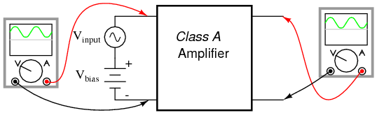
Class A: The amplifier output is a faithful reproduction of the input.
Class B operation is what we had the first time an AC signal was applied to the common-emitter amplifier with no DC bias voltage. The transistor spent half its time in active mode and the other half in cutoff with the input voltage too low (or even of the wrong polarity!) to forward-bias its base-emitter junction.
Class B: Bias is such that half (180o) of the waveform is reproduced.
By itself, an amplifier operating in class B mode is not very useful. In most circumstances, the severe distortion introduced into the waveshape by eliminating half of it would be unacceptable. However, class B operation is a useful mode of biasing if two amplifiers are operated as a push-pull pair, each amplifier handling only half of the waveform at a time:

Class B push pull amplifier: Each transistor reproduces half of the waveform. Combining the halves produces a faithful reproduction of the whole wave.
Transistor Q1 “pushes” (drives the output voltage in a positive direction with respect to ground), while transistor Q2 “pulls” the output voltage (in a negative direction, toward 0 volts with respect to ground). Individually, each of these transistors is operating in class B mode, active only for one-half of the input waveform cycle. Together, however, both function as a team to produce an output waveform identical in shape to the input waveform.
A decided advantage of the class B (push-pull) amplifier design over the class A design is greater output power capability. With a class A design, the transistor dissipates considerable energy in the form of heat because it never stops conducting current. At all points in the wave cycle it is in the active (conducting) mode, conducting substantial current and dropping substantial voltage. There is substantial power dissipated by the transistor throughout the cycle. In a class B design, each transistor spends half the time in cutoff mode, where it dissipates zero power (zero current = zero power dissipation). This gives each transistor a time to “rest” and cool while the other transistor carries the burden of the load. Class A amplifiers are simpler in design, but tend to be limited to low-power signal applications for the simple reason of transistor heat dissipation.
Another class of amplifier operation known as class AB, is somewhere between class A and class B: the transistor spends more than 50% but less than 100% of the time conducting current.
If the input signal bias for an amplifier is slightly negative (opposite of the bias polarity for class A operation), the output waveform will be further “clipped” than it was with class B biasing, resulting in an operation where the transistor spends most of the time in cutoff mode:
Class C: Conduction is for less than a half cycle (< 180o).
At first, this scheme may seem utterly pointless. After all, how useful could an amplifier be if it clips the waveform as badly as this? If the output is used directly with no conditioning of any kind, it would indeed be of questionable utility. However, with the application of a tank circuit (parallel resonant inductor-capacitor combination) to the output, the occasional output surge produced by the amplifier can set in motion a higher-frequency oscillation maintained by the tank circuit. This may be likened to a machine where a heavy flywheel is given an occasional “kick” to keep it spinning:
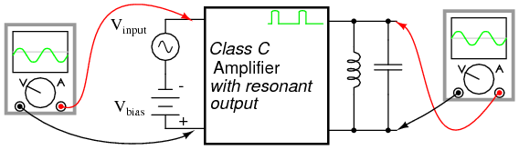
Class C amplifier driving a resonant circuit.
Called class C operation, this scheme also enjoys high power efficiency due to the fact that the transistor(s) spend the vast majority of time in the cutoff mode, where they dissipate zero power. The rate of output waveform decay (decreasing oscillation amplitude between “kicks” from the amplifier) is exaggerated here for the benefit of illustration. Because of the tuned tank circuit on the output, this circuit is usable only for amplifying signals of definite, fixed amplitude. A class C amplifier may used in an FM (frequency modulation) radio transmitter. However, the class C amplifier may not directly amplify an AM (amplitude modulated) signal due to distortion.
Another kind of amplifier operation, significantly different from Class A, B, AB, or C, is called Class D. It is not obtained by applying a specific measure of bias voltage as are the other classes of operation, but requires a radical re-design of the amplifier circuit itself. It is a little too early in this chapter to investigate exactly how a class D amplifier is built, but not too early to discuss its basic principle of operation.
A class D amplifier reproduces the profile of the input voltage waveform by generating a rapidly-pulsing squarewave output. The duty cycle of this output waveform (time “on” versus total cycle time) varies with the instantaneous amplitude of the input signal. The plots in (Figure below demonstrate this principle.
Class D amplifier: Input signal and unfiltered output.
The greater the instantaneous voltage of the input signal, the greater the duty cycle of the output squarewave pulse. If there can be any goal stated of the class D design, it is to avoid active-mode transistor operation. Since the output transistor of a class D amplifier is never in the active mode, only cutoff or saturated, there will be little heat energy dissipated by it. This results in very high power efficiency for the amplifier. Of course, the disadvantage of this strategy is the overwhelming presence of harmonics on the output. Fortunately, since these harmonic frequencies are typically much greater than the frequency of the input signal, these can be filtered out by a low-pass filter with relative ease, resulting in an output more closely resembling the original input signal waveform. Class D technology is typically seen where extremely high power levels and relatively low frequencies are encountered, such as in industrial inverters (devices converting DC into AC power to run motors and other large devices) and high-performance audio amplifiers.
A term you will likely come across in your studies of electronics is something called quiescent, which is a modifier designating the zero input condition of a circuit. Quiescent current, for example, is the amount of current in a circuit with zero input signal voltage applied. Bias voltage in a transistor circuit forces the transistor to operate at a different level of collector current with zero input signal voltage than it would without that bias voltage. Therefore, the amount of bias in an amplifier circuit determines its quiescent values.
In a class A amplifier, the quiescent current should be exactly half of its saturation value (halfway between saturation and cutoff, cutoff by definition being zero). Class B and class C amplifiers have quiescent current values of zero, since these are supposed to be cutoff with no signal applied. Class AB amplifiers have very low quiescent current values, just above cutoff. To illustrate this graphically, a “load line” is sometimes plotted over a transistor's characteristic curves to illustrate its range of operation while connected to a load resistance of specific value shown in Figure below.

Example load line drawn over transistor characteristic curves from Vsupply to saturation current.
A load line is a plot of collector-to-emitter voltage over a range of collector currents. At the lower-right corner of the load line, voltage is at maximum and current is at zero, representing a condition of cutoff. At the upper-left corner of the line, voltage is at zero while current is at a maximum, representing a condition of saturation. Dots marking where the load line intersects the various transistor curves represent realistic operating conditions for those base currents given.
Quiescent operating conditions may be shown on this graph in the form of a single dot along the load line. For a class A amplifier, the quiescent point will be in the middle of the load line as in (Figure below.
Quiescent point (dot) for class A.
In this illustration, the quiescent point happens to fall on the curve representing a base current of 40 µA. If we were to change the load resistance in this circuit to a greater value, it would affect the slope of the load line, since a greater load resistance would limit the maximum collector current at saturation, but would not change the collector-emitter voltage at cutoff. Graphically, the result is a load line with a different upper-left point and the same lower-right point as in (Figure below)
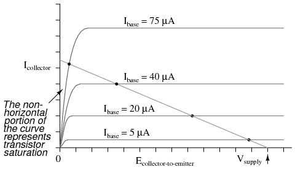
Load line resulting from increased load resistance.
Note how the new load line doesn't intercept the 75 µA curve along its flat portion as before. This is very important to realize because the non-horizontal portion of a characteristic curve represents a condition of saturation. Having the load line intercept the 75 µA curve outside of the curve's horizontal range means that the amplifier will be saturated at that amount of base current. Increasing the load resistor value is what caused the load line to intercept the 75 µA curve at this new point, and it indicates that saturation will occur at a lesser value of base current than before.
With the old, lower-value load resistor in the circuit, a base current of 75 µA would yield a proportional collector current (base current multiplied by β). In the first load line graph, a base current of 75 µA gave a collector current almost twice what was obtained at 40 µA, as the β ratio would predict. However, collector current increases marginally between base currents 75 µA and 40 µA, because the transistor begins to lose sufficient collector-emitter voltage to continue to regulate collector current.
To maintain linear (no-distortion) operation, transistor amplifiers shouldn't be operated at points where the transistor will saturate; that is, where the load line will not potentially fall on the horizontal portion of a collector current curve. We'd have to add a few more curves to the graph in Figure below before we could tell just how far we could “push” this transistor with increased base currents before it saturates.

More base current curves shows saturation detail.
It appears in this graph that the highest-current point on the load line falling on the straight portion of a curve is the point on the 50 µA curve. This new point should be considered the maximum allowable input signal level for class A operation. Also for class A operation, the bias should be set so that the quiescent point is halfway between this new maximum point and cutoff shown in Figure below.
New quiescent point avoids saturation region.
Now that we know a little more about the consequences of different DC bias voltage levels, it is time to investigate practical biasing techniques. So far, I've shown a small DC voltage source (battery) connected in series with the AC input signal to bias the amplifier for whatever desired class of operation. In real life, the connection of a precisely-calibrated battery to the input of an amplifier is simply not practical. Even if it were possible to customize a battery to produce just the right amount of voltage for any given bias requirement, that battery would not remain at its manufactured voltage indefinitely. Once it started to discharge and its output voltage drooped, the amplifier would begin to drift toward class B operation.
Take this circuit, illustrated in the common-emitter section for a SPICE simulation, for instance, in Figure below.
Impractical base battery bias.
That 2.3 volt “Vbias” battery would not be practical to include in a real amplifier circuit. A far more practical method of obtaining bias voltage for this amplifier would be to develop the necessary 2.3 volts using a voltage divider network connected across the 15 volt battery. After all, the 15 volt battery is already there by necessity, and voltage divider circuits are easy to design and build. Let's see how this might look in Figure below.

Voltage divider bias.
If we choose a pair of resistor values for R2 and R3 that will produce 2.3 volts across R3 from a total of 15 volts (such as 8466 Ω for R2 and 1533 Ω for R3), we should have our desired value of 2.3 volts between base and emitter for biasing with no signal input. The only problem is, this circuit configuration places the AC input signal source directly in parallel with R3 of our voltage divider. This is not acceptable, as the AC source will tend to overpower any DC voltage dropped across R3. Parallel components must have the same voltage, so if an AC voltage source is directly connected across one resistor of a DC voltage divider, the AC source will “win” and there will be no DC bias voltage added to the signal.
One way to make this scheme work, although it may not be obvious why it will work, is to place a coupling capacitor between the AC voltage source and the voltage divider as in Figure below.
Coupling capacitor prevents voltage divider bias from flowing into signal generator.
The capacitor forms a high-pass filter between the AC source and the DC voltage divider, passing almost all of the AC signal voltage on to the transistor while blocking all DC voltage from being shorted through the AC signal source. This makes much more sense if you understand the superposition theorem and how it works. According to superposition, any linear, bilateral circuit can be analyzed in a piecemeal fashion by only considering one power source at a time, then algebraically adding the effects of all power sources to find the final result. If we were to separate the capacitor and R2--R3 voltage divider circuit from the rest of the amplifier, it might be easier to understand how this superposition of AC and DC would work.
With only the AC signal source in effect, and a capacitor with an arbitrarily low impedance at signal frequency, almost all the AC voltage appears across R3:
Due to the coupling capacitor's very low impedance at the signal frequency, it behaves much like a piece of wire, thus can be omitted for this step in superposition analysis.
With only the DC source in effect, the capacitor appears to be an open circuit, and thus neither it nor the shorted AC signal source will have any effect on the operation of the R2--R3 voltage divider in Figure below.
The capacitor appears to be an open circuit as far at the DC analysis is concerned
Combining these two separate analyses in Figure below, we get a superposition of (almost) 1.5 volts AC and 2.3 volts DC, ready to be connected to the base of the transistor.
Combined AC and DC circuit.
Enough talk -- its about time for a SPICE simulation of the whole amplifier circuit in Figure below. We will use a capacitor value of 100 µF to obtain an arbitrarily low (0.796 Ω) impedance at 2000 Hz:
|
voltage divider biasing vinput 1 0 sin (0 1.5 2000 0 0) c1 1 5 100u r1 5 2 1k r2 4 5 8466 r3 5 0 1533 q1 3 2 0 mod1 rspkr 3 4 8 v1 4 0 dc 15 .model mod1 npn .tran 0.02m 0.78m .plot tran v(1,0) i(v1) .end |
SPICE simulation of voltage divider bias.
Note the substantial distortion in the output waveform in Figure above. The sine wave is being clipped during most of the input signal's negative half-cycle. This tells us the transistor is entering into cutoff mode when it shouldn't (I'm assuming a goal of class A operation as before). Why is this? This new biasing technique should give us exactly the same amount of DC bias voltage as before, right?
With the capacitor and R2--R3 resistor network unloaded, it will provide exactly 2.3 volts worth of DC bias. However, once we connect this network to the transistor, it is no longer unloaded. Current drawn through the base of the transistor will load the voltage divider, thus reducing the DC bias voltage available for the transistor. Using the diode current source transistor model in Figure below to illustrate, the bias problem becomes evident.

Diode transistor model shows loading of voltage divider.
A voltage divider's output depends not only on the size of its constituent resistors, but also on how much current is being divided away from it through a load. The base-emitter PN junction of the transistor is a load that decreases the DC voltage dropped across R3, due to the fact that the bias current joins with R3's current to go through R2, upsetting the divider ratio formerly set by the resistance values of R2 and R3. To obtain a DC bias voltage of 2.3 volts, the values of R2 and/or R3 must be adjusted to compensate for the effect of base current loading. To increase the DC voltage dropped across R3, lower the value of R2, raise the value of R3, or both.
|
voltage divider biasing vinput 1 0 sin (0 1.5 2000 0 0) c1 1 5 100u r1 5 2 1k r2 4 5 6k <--- R2 decreased to 6 k r3 5 0 4k <--- R3 increased to 4 k q1 3 2 0 mod1 rspkr 3 4 8 v1 4 0 dc 15 .model mod1 npn .tran 0.02m 0.78m .plot tran v(1,0) i(v1) .end |
No distortion of the output after adjusting R2 and R3.
The new resistor values of 6 kΩ and 4 kΩ (R2 and R3, respectively) in Figure above results in class A waveform reproduction, just the way we wanted.
Although transistor switching circuits operate without bias, it is unusual for analog circuits to operate without bias. One of the few examples is “TR One, one transistor radio” TR One, Ch 9 with an amplified AM (amplitude modulation) detector. Note the lack of a bias resistor at the base in that circuit. In this section we look at a few basic bias circuits which can set a selected emitter current IE. Given a desired emitter current IE, what values of bias resistors are required, RB, RE, etc?
The simplest biasing applies a base-bias resistor between the base and a base battery VBB. It is convenient to use the existing VCC supply instead of a new bias supply. An example of an audio amplifier stage using base-biasing is “Crystal radio with one transistor . . . ” crystal radio, Ch 9 . Note the resistor from the base to the battery terminal. A similar circuit is shown in Figure below.
Write a KVL (Krichhoff's voltage law) equation about the loop containing the battery, RB, and the VBE diode drop on the transistor in Figure below. Note that we use VBB for the base supply, even though it is actually VCC. If β is large we can make the approximation that IC =IE. For silicon transistors VBE≅0.7V.

Base-bias
Silicon small signal transistors typically have a β in the range of 100-300. Assuming that we have a β=100 transistor, what value of base-bias resistor is required to yield an emitter current of 1mA?
Solving the IE base-bias equation for RB and substituting β, VBB, VBE, and IE yields 930kΩ. The closest standard value is 910kΩ.
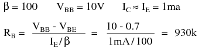
What is the emitter current with a 910kΩ resistor? What is the emitter current if we randomly get a β=300 transistor?
The emitter current is little changed in using the standard value 910kΩ resistor. However, with a change in β from 100 to 300, the emitter current has tripled. This is not acceptable in a power amplifier if we expect the collector voltage to swing from near VCC to near ground. However, for low level signals from micro-volts to a about a volt, the bias point can be centered for a β of square root of (100·300)=173. The bias point will still drift by a considerable amount . However, low level signals will not be clipped.
Base-bias by its self is not suitable for high emitter currents, as used in power amplifiers. The base-biased emitter current is not temperature stable. Thermal run away is the result of high emitter current causing a temperature increase which causes an increase in emitter current, which further increases temperature.
Variations in bias due to temperature and beta may be reduced by moving the VBB end of the base-bias resistor to the collector as in Figure below. If the emitter current were to increase, the voltage drop across RC increases, decreasing VC, decreasing IB fed back to the base. This, in turn, decreases the emitter current, correcting the original increase.
Write a KVL equation about the loop containing the battery, RC , RB , and the VBE drop. Substitute IC≅IE and IB≅IE/β. Solving for IE yields the IE CFB-bias equation. Solving for IB yields the IB CFB-bias equation.
Collector-feedback bias.
Find the required collector feedback bias resistor for an emitter current of 1 mA, a 4.7K collector load resistor, and a transistor with β=100 . Find the collector voltage VC. It should be approximately midway between VCC and ground.

The closest standard value to the 460k collector feedback bias resistor is 470k. Find the emitter current IE with the 470 K resistor. Recalculate the emitter current for a transistor with β=100 and β=300.
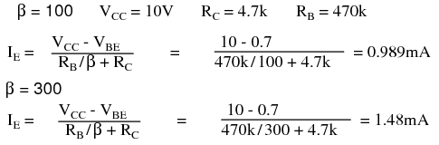
We see that as beta changes from 100 to 300, the emitter current increases from 0.989mA to 1.48mA. This is an improvement over the previous base-bias circuit which had an increase from 1.02mA to 3.07mA. Collector feedback bias is twice as stable as base-bias with respect to beta variation.
Inserting a resistor RE in the emitter circuit as in Figure below causes degeneration, also known as negative feedback. This opposes a change in emitter current IE due to temperature changes, resistor tolerances, beta variation, or power supply tolerance. Typical tolerances are as follows: resistor— 5%, beta— 100-300, power supply— 5%. Why might the emitter resistor stabilize a change in current? The polarity of the voltage drop across RE is due to the collector battery VCC. The end of the resistor closest to the (-) battery terminal is (-), the end closest to the (+) terminal it (+). Note that the (-) end of RE is connected via VBB battery and RB to the base. Any increase in current flow through RE will increase the magnitude of negative voltage applied to the base circuit, decreasing the base current, decreasing the emitter current. This decreasing emitter current partially compensates the original increase.

Emitter-bias
Note that base-bias battery VBB is used instead of VCC to bias the base in Figure above. Later we will show that the emitter-bias is more effective with a lower base bias battery. Meanwhile, we write the KVL equation for the loop through the base-emitter circuit, paying attention to the polarities on the components. We substitute IB≅IE/β and solve for emitter current IE. This equation can be solved for RB , equation: RB emitter-bias, Figure above.
Before applying the equations: RB emitter-bias and IE emitter-bias, Figure above, we need to choose values for RC and RE . RC is related to the collector supply VCC and the desired collector current IC which we assume is approximately the emitter current IE. Normally the bias point for VC is set to half of VCC. Though, it could be set higher to compensate for the voltage drop across the emitter resistor RE. The collector current is whatever we require or choose. It could range from micro-Amps to Amps depending on the application and transistor rating. We choose IC = 1mA, typical of a small-signal transistor circuit. We calculate a value for RC and choose a close standard value. An emitter resistor which is 10-50% of the collector load resistor usually works well.
Our first example sets the base-bias supply to high at VBB = VCC = 10V to show why a lower voltage is desirable. Determine the required value of base-bias resistor RB. Choose a standard value resistor. Calculate the emitter current for β=100 and β=300. Compare the stabilization of the current to prior bias circuits.

An 883k resistor was calculated for RB, an 870k chosen. At β=100, IE is 1.01mA.

For β=300 the emitter currents are shown in Table below.
Emitter current comparison for β=100, β=300.
| Bias circuit | IC β=100 | IC β=300 |
|---|---|---|
| base-bias | 1.02mA | 3.07mA |
| collector feedback bias | 0.989mA | 1.48mA |
| emitter-bias, VBB=10V | 1.01mA | 2.76mA |
Table above shows that for VBB = 10V, emitter-bias does not do a very good job of stabilizing the emitter current. The emitter-bias example is better than the previous base-bias example, but, not by much. The key to effective emitter bias is lowering the base supply VBB nearer to the amount of emitter bias.
How much emitter bias do we Have? Rounding, that is emitter current times emitter resistor: IERE = (1mA)(470) = 0.47V. In addition, we need to overcome the VBE = 0.7V. Thus, we need a VBB >(0.47 + 0.7)V or >1.17V. If emitter current deviates, this number will change compared with the fixed base supply VBB,causing a correction to base current IB and emitter current IE. A good value for VB >1.17V is 2V.

The calculated base resistor of 83k is much lower than the previous 883k. We choose 82k from the list of standard values. The emitter currents with the 82k RB for β=100 and β=300 are:

Comparing the emitter currents for emitter-bias with VBB = 2V at β=100 and β=300 to the previous bias circuit examples in Table below, we see considerable improvement at 1.75mA, though, not as good as the 1.48mA of collector feedback.
Emitter current comparison for β=100, β=300.
| Bias circuit | IC β=100 | IC β=300 |
|---|---|---|
| base-bias | 1.02mA | 3.07mA |
| collector feedback bias | 0.989mA | 1.48mA |
| emitter-bias, VBB=10V | 1.01mA | 2.76mA |
| emitter-bias, VBB=2V | 1.01mA | 1.75mA |
How can we improve the performance of emitter-bias? Either increase the emitter resistor RE or decrease the base-bias supply VBB or both. As an example, we double the emitter resistor to the nearest standard value of 910Ω.

The calculated RB = 39k is a standard value resistor. No need to recalculate IE for β = 100. For β = 300, it is:

The performance of the emitter-bias circuit with a 910
Emitter current comparison for β=100, β=300.
| Bias circuit | IC β=100 | IC β=300 |
|---|---|---|
| base-bias | 1.02mA | 3.07mA |
| collector feedback bias | 0.989mA | 1.48mA |
| emitter-bias, VBB=10V | 1.01mA | 2.76mA |
| emitter-bias, VBB=2V, RE=470 | 1.01mA | 1.75mA |
| emitter-bias, VBB=2V, RE=910 | 1.00mA | 1.25mA |
As an exercise, rework the emitter-bias example with the emitter resistor reverted back to 470Ω, and the base-bias supply reduced to 1.5V.
The 33k base resistor is a standard value, emitter current at β = 100 is OK. The emitter current at β = 300 is:
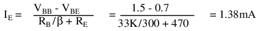
Table below below compares the exercise results 1mA and 1.38mA to the previous examples.
Emitter current comparison for β=100, β=300.
| Bias circuit | IC β=100 | IC β=300 |
|---|---|---|
| base-bias | 1.02mA | 3.07mA |
| collector feedback bias | 0.989mA | 1.48mA |
| emitter-bias, VBB=10V | 1.01mA | 2.76mA |
| emitter-bias, VBB=2V, RB=470 | 1.01mA | 1.75mA |
| emitter-bias, VBB=2V, RB=910 | 1.00mA | 1.25mA |
| emitter-bias, VBB=1.5V, RB=470 | 1.00mA | 1.38mA |
The emitter-bias equations have been repeated in Figure below with the internal emitter resistance included for better accuracy. The internal emitter resistance is the resistance in the emitter circuit contained within the transistor package. This internal resistance rEE is significant when the (external) emitter resistor RE is small, or even zero. The value of internal resistance REE is a function of emitter current IE, Table below.
Derivation of rEE
rEE = KT/IEm where: K=1.38×10-23 watt-sec/oC, Boltzman's constant T= temperature in Kelvins ≅300. IE = emitter current m = varies from 1 to 2 for Silicon rEE ≅ 0.026V/IE = 26mV/IE
For reference the 26mV approximation is listed as equation rEE in Figure below.
Emitter-bias equations with internal emitter resistance rEE included..
The more accurate emitter-bias equations in Figure above may be derived by writing a KVL equation. Alternatively, start with equations IE emitter-bias and RB emitter-bias in Figure previous, substituting RE with rEE+RE. The result is equations IE EB and RB EB, respectively in Figure above.
Redo the RB calculation in the previous example emitter-bias with the inclusion of rEE and compare the results.

The inclusion of rEE in the calculation results in a lower value of the base resistor RB a shown in Table below. It falls below the standard value 82k resistor instead of above it.
Effect of inclusion of rEE on calculated RB
| rEE? | rEE Value |
|---|---|
| Without rEE | 83k |
| With rEE | 80.4k |
One problem with emitter bias is that a considerable part of the output signal is dropped across the emitter resistor RE (Figure below). This voltage drop across the emitter resistor is in series with the base and of opposite polarity compared with the input signal. (This is similar to a common collector configuration having <1 gain.) This degeneration severely reduces the gain from base to collector. The solution for AC signal amplifiers is to bypass the emitter resistor with a capacitor. This restores the AC gain since the capacitor is a short for AC signals. The DC emitter current still experiences degeneration in the emitter resistor, thus, stabilizing the DC current.
Cbypass is required to prevent AC gain reduction.
What value should the bypass capacitor be? That depends on the lowest frequency to be amplified. For radio frequencies Cbpass would be small. For an audio amplifier extending down to 20Hz it will be large. A “rule of thumb” for the bypass capacitor is that the reactance should be 1/10 of the emitter resistance or less. The capacitor should be designed to accommodate the lowest frequency being amplified. The capacitor for an audio amplifier covering 20Hz to 20kHz would be:
Note that the internal emitter resistance rEE is not bypassed by the bypass capacitor.
Stable emitter bias requires a low voltage base bias supply, Figure below. The alternative to a base supply VBB is a voltage divider based on the collector supply VCC.
Voltage Divider bias replaces base battery with voltage divider.
The design technique is to first work out an emitter-bias design, Then convert it to the voltage divider bias configuration by using Thevenin's Theorem. [TK1] The steps are shown graphically in Figure below. Draw the voltage divider without assigning values. Break the divider loose from the base. (The base of the transistor is the load.) Apply Thevenin's Theorem to yield a single Thevenin equivalent resistance Rth and voltage source Vth.
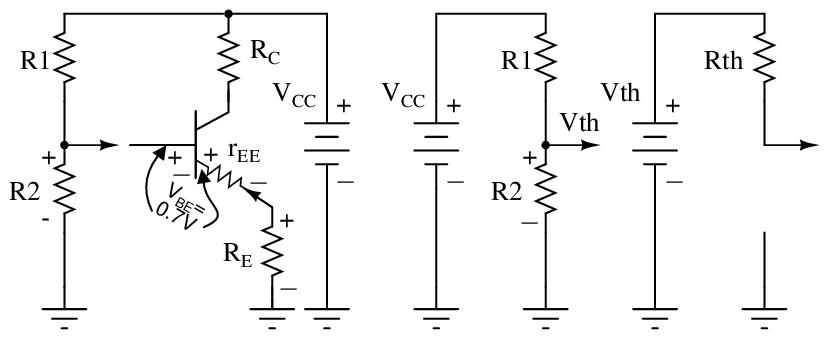
Thevenin's Theorem converts voltage divider to single supply Vth and resistance Rth.
The Thevenin equivalent resistance is the resistance from load point (arrow) with the battery (VCC) reduced to 0 (ground). In other words, R1||R2.The Thevenin equivalent voltage is the open circuit voltage (load removed). This calculation is by the voltage divider ratio method. R1 is obtained by eliminating R2 from the pair of equations for Rth and Vth. The equation of R1 is in terms of known quantities Rth, Vth, Vcc. Note that Rth is RB , the bias resistor from the emitter-bias design. The equation for R2 is in terms of R1 and Rth.
Convert this previous emitter-bias example to voltage divider bias.
Emitter-bias example converted to voltage divider bias.
These values were previously selected or calculated for an emitter-bias example
Substituting VCC , VBB , RB yields R1 and R2 for the voltage divider bias configuration.
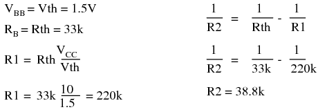
R1 is a standard value of 220K. The closest standard value for R2 corresponding to 38.8k is 39k. This does not change IE enough for us to calculate it.
Problem: Calculate the bias resistors for the cascode amplifier in Figure below. VB2 is the bias voltage for the common emitter stage. VB1 is a fairly high voltage at 11.5 because we want the common-base stage to hold the emitter at 11.5-0.7=10.8V, about 11V. (It will be 10V after accounting for the voltage drop across RB1 .) That is, the common-base stage is the load, substitute for a resistor, for the common-emitter stage's collector. We desire a 1mA emitter current.

Bias for a cascode amplifier.
Problem: Convert the base bias resistors for the cascode amplifier to voltage divider bias resistors driven by the VCC of 20V.
The final circuit diagram is shown in the “Practical Analog Circuits” chapter, “Class A cascode amplifier . . . ” cascode, Ch 9 .

Biasing equations summary.
To overcome the challenge of creating necessary DC bias voltage for an amplifier's input signal without resorting to the insertion of a battery in series with the AC signal source, we used a voltage divider connected across the DC power source. To make this work in conjunction with an AC input signal, we “coupled” the signal source to the divider through a capacitor, which acted as a high-pass filter. With that filtering in place, the low impedance of the AC signal source couldn't “short out” the DC voltage dropped across the bottom resistor of the voltage divider. A simple solution, but not without any disadvantages.
Most obvious is the fact that using a high-pass filter capacitor to couple the signal source to the amplifier means that the amplifier can only amplify AC signals. A steady, DC voltage applied to the input would be blocked by the coupling capacitor just as much as the voltage divider bias voltage is blocked from the input source. Furthermore, since capacitive reactance is frequency-dependent, lower-frequency AC signals will not be amplified as much as higher-frequency signals. Non-sinusoidal signals will tend to be distorted, as the capacitor responds differently to each of the signal's constituent harmonics. An extreme example of this would be a low-frequency square-wave signal in Figure below.

Capacitively coupled low frequency square-wave shows distortion.
Incidentally, this same problem occurs when oscilloscope inputs are set to the “AC coupling” mode as in Figure below. In this mode, a coupling capacitor is inserted in series with the measured voltage signal to eliminate any vertical offset of the displayed waveform due to DC voltage combined with the signal. This works fine when the AC component of the measured signal is of a fairly high frequency, and the capacitor offers little impedance to the signal. However, if the signal is of a low frequency, or contains considerable levels of harmonics over a wide frequency range, the oscilloscope's display of the waveform will not be accurate. (Figure below) Low frequency signals may be viewed by setting the oscilloscope to “DC coupling” in Figure below.

With DC coupling, the oscilloscope properly indicates the shape of the square wave coming from the signal generator.

Low frequency: With AC coupling, the high-pass filtering of the coupling capacitor distorts the square wave's shape so that what is seen is not an accurate representation of the real signal.
In applications where the limitations of capacitive coupling (Figure above) would be intolerable, another solution may be used: direct coupling. Direct coupling avoids the use of capacitors or any other frequency-dependent coupling component in favor of resistors. A direct-coupled amplifier circuit is shown in Figure below.
Direct coupled amplifier: direct coupling to speaker.
With no capacitor to filter the input signal, this form of coupling exhibits no frequency dependence. DC and AC signals alike will be amplified by the transistor with the same gain (the transistor itself may tend to amplify some frequencies better than others, but that is another subject entirely!).
If direct coupling works for DC as well as for AC signals, then why use capacitive coupling for any application? One reason might be to avoid any unwanted DC bias voltage naturally present in the signal to be amplified. Some AC signals may be superimposed on an uncontrolled DC voltage right from the source, and an uncontrolled DC voltage would make reliable transistor biasing impossible. The high-pass filtering offered by a coupling capacitor would work well here to avoid biasing problems.
Another reason to use capacitive coupling rather than direct is its relative lack of signal attenuation. Direct coupling through a resistor has the disadvantage of diminishing, or attenuating, the input signal so that only a fraction of it reaches the base of the transistor. In many applications, some attenuation is necessary anyway to prevent signal levels from “overdriving” the transistor into cutoff and saturation, so any attenuation inherent to the coupling network is useful anyway. However, some applications require that there be no signal loss from the input connection to the transistor's base for maximum voltage gain, and a direct coupling scheme with a voltage divider for bias simply won't suffice.
So far, we've discussed a couple of methods for coupling an input signal to an amplifier, but haven't addressed the issue of coupling an amplifier's output to a load. The example circuit used to illustrate input coupling will serve well to illustrate the issues involved with output coupling.
In our example circuit, the load is a speaker. Most speakers are electromagnetic in design: that is, they use the force generated by an lightweight electromagnet coil suspended within a strong permanent-magnet field to move a thin paper or plastic cone, producing vibrations in the air which our ears interpret as sound. An applied voltage of one polarity moves the cone outward, while a voltage of the opposite polarity will move the cone inward. To exploit cone's full freedom of motion, the speaker must receive true (unbiased) AC voltage. DC bias applied to the speaker coil offsets the cone from its natural center position, and this limits the back-and-forth motion it can sustain from the applied AC voltage without overtraveling. However, our example circuit (Figure above) applies a varying voltage of only one polarity across the speaker, because the speaker is connected in series with the transistor which can only conduct current one way. This would be unacceptable for any high-power audio amplifier.
Somehow we need to isolate the speaker from the DC bias of the collector current so that it only receives AC voltage. One way to achieve this goal is to couple the transistor collector circuit to the speaker through a transformer in Figure below)

Transformer coupling isolates DC from the load (speaker).
Voltage induced in the secondary (speaker-side) of the transformer will be strictly due to variations in collector current, because the mutual inductance of a transformer only works on changes in winding current. In other words, only the AC portion of the collector current signal will be coupled to the secondary side for powering the speaker. The speaker will “see” true alternating current at its terminals, without any DC bias.
Transformer output coupling works, and has the added benefit of being able to provide impedance matching between the transistor circuit and the speaker coil with custom winding ratios. However, transformers tend to be large and heavy, especially for high-power applications. Also, it is difficult to engineer a transformer to handle signals over a wide range of frequencies, which is almost always required for audio applications. To make matters worse, DC current through the primary winding adds to the magnetization of the core in one polarity only, which tends to make the transformer core saturate more easily in one AC polarity cycle than the other. This problem is reminiscent of having the speaker directly connected in series with the transistor: a DC bias current tends to limit how much output signal amplitude the system can handle without distortion. Generally, though, a transformer can be designed to handle a lot more DC bias current than a speaker without running into trouble, so transformer coupling is still a viable solution in most cases. See the coupling transformer between Q4 and the speaker, Regency TR1, Ch 9 as an example of transformer coupling.
Another method to isolate the speaker from DC bias in the output signal is to alter the circuit a bit and use a coupling capacitor in a manner similar to coupling the input signal (Figure below) to the amplifier.

Capacitor coupling isolates DC from the load.
This circuit in Figure above resembles the more conventional form of common-emitter amplifier, with the transistor collector connected to the battery through a resistor. The capacitor acts as a high-pass filter, passing most of the AC voltage to the speaker while blocking all DC voltage. Again, the value of this coupling capacitor is chosen so that its impedance at the expected signal frequency will be arbitrarily low.
The blocking of DC voltage from an amplifier's output, be it via a transformer or a capacitor, is useful not only in coupling an amplifier to a load, but also in coupling one amplifier to another amplifier. “Staged” amplifiers are often used to achieve higher power gains than what would be possible using a single transistor as in Figure below.
Capacitor coupled three stage common-emitter amplifier.
While it is possible to directly couple each stage to the next (via a resistor rather than a capacitor), this makes the whole amplifier very sensitive to variations in the DC bias voltage of the first stage, since that DC voltage will be amplified along with the AC signal until the last stage. In other words, the biasing of the first stage will affect the biasing of the second stage, and so on. However, if the stages are capacitively coupled shown in the above illustration, the biasing of one stage has no effect on the biasing of the next, because DC voltage is blocked from passing on to the next stage.
Transformer coupling between amplifier stages is also a possibility, but less often seen due to some of the problems inherent to transformers mentioned previously. One notable exception to this rule is in radio-frequency amplifiers (Figure below) with small coupling transformers, having air cores (making them immune to saturation effects), that are part of a resonant circuit to block unwanted harmonic frequencies from passing on to subsequent stages. The use of resonant circuits assumes that the signal frequency remains constant, which is typical of radio circuitry. Also, the “flywheel” effect of LC tank circuits allows for class C operation for high efficiency.

Three stage tuned RF amplifier illustrates transformer coupling.
Note the transformer coupling between transistors Q1, Q2, Q3, and Q4, Regency TR1, Ch 9 . The three intermediate frequency (IF) transformers within the dashed boxes couple the IF signal from collector to base of following transistor IF amplifiers. The intermediate freqency ampliers are RF amplifiers, though, at a different frequency than the antenna RF input.
Having said all this, it must be mentioned that it is possible to use direct coupling within a multi-stage transistor amplifier circuit. In cases where the amplifier is expected to handle DC signals, this is the only alternative.
The trend of electronics to more widespread use of integrated circuits has encouraged the use of direct coupling over transformer or capacitor coupling. The only easily manufactured integrated circuit component is the transistor. Moderate quality resistors can also be produced. Though, transistors are favored. Integrated capacitors to only a few 10's of pF are possible. Large capacitors are not integrable. If necessary, these can be external components. The same is true of transformers. Since integrated transistors are inexpensive, as many transistors as possible are substituted for the offending capacitors and transformers. As much direct coupled gain as possible is designed into ICs between the external coupling components. While external capacitors and transformers are used, these are even being designed out if possible. The result is that a modern IC radio (See “IC radio”, Ch 9 ) looks nothing like the original 4-transistor radio Regency TR1, Ch 9 .
Even discrete transistors are inexpensive compared with transformers. Bulky audio transformers can be replaced by transistors. For example, a common-collector (emitter follower) configuration can impedance match a low output impedance like a speaker. It is also possible to replace large coupling capacitors with transistor circuitry.
We still like to illustrate texts with transformer coupled audio amplifiers. The circuits are simple. The component count is low. And, these are good introductory circuits— easy to understand.
The circuit in Figure below (a) is a simplified transformer coupled push-pull audio amplifier. In push-pull, pair of transistors alternately amplify the positive and negative portions of the input signal. Neither transistor nor the other conducts for no signal input. A positive input signal will be positive at the top of the transformer secondary causing the top transistor to conduct. A negative input will yield a positive signal at the bottom of the secondary, driving the bottom transistor into conduction. Thus the transistors amplify alternate halves of a signal. As drawn, neither transistor in Figure below (a) will conduct for an input below 0.7 Vpeak. A practical circuit connects the secondary center tap to a 0.7 V (or greater) resistor divider instead of ground to bias both transistor for true class B.

(a) Transformer coupled push-pull amplifier. (b) Direct coupled complementary-pair amplifier replaces transformers with transistors.
The circuit in Figure above (b) is the modern version which replaces the transformer functions with transistors. Transistors Q1 and Q2 are common emitter amplifiers, inverting the signal with gain from base to collector. Transistors Q3 and Q4 are known as a complementary pair because these NPN and PNP transistors amplify alternate halves (positive and negative, respectively) of the waveform. The parallel connection the bases allows phase splitting without an input transformer at (a). The speaker is the emitter load for Q3 and Q4. Parallel connection of the emitters of the NPN and PNP transistors eliminates the center-tapped output transformer at (a) The low output impedance of the emitter follower serves to match the low 8 Ω impedance of the speaker to the preceding common emitter stage. Thus, inexpensive transistors replace transformers. For the complete circuit see“ Direct coupled complementary symmetry 3 w audio amplifier,”Ch 9
If some percentage of an amplifier's output signal is connected to the input, so that the amplifier amplifies part of its own output signal, we have what is known as feedback. Feedback comes in two varieties: positive (also called regenerative), and negative (also called degenerative). Positive feedback reinforces the direction of an amplifier's output voltage change, while negative feedback does just the opposite.
A familiar example of feedback happens in public-address (“PA”) systems where someone holds the microphone too close to a speaker: a high-pitched “whine” or “howl” ensues, because the audio amplifier system is detecting and amplifying its own noise. Specifically, this is an example of positive or regenerative feedback, as any sound detected by the microphone is amplified and turned into a louder sound by the speaker, which is then detected by the microphone again, and so on . . . the result being a noise of steadily increasing volume until the system becomes “saturated” and cannot produce any more volume.
One might wonder what possible benefit feedback is to an amplifier circuit, given such an annoying example as PA system “howl.” If we introduce positive, or regenerative, feedback into an amplifier circuit, it has the tendency of creating and sustaining oscillations, the frequency of which determined by the values of components handling the feedback signal from output to input. This is one way to make an oscillator circuit to produce AC from a DC power supply. Oscillators are very useful circuits, and so feedback has a definite, practical application for us. See “Phase shift oscillator” , Ch 9 for a practical application of positive feedback.
Negative feedback, on the other hand, has a “dampening” effect on an amplifier: if the output signal happens to increase in magnitude, the feedback signal introduces a decreasing influence into the input of the amplifier, thus opposing the change in output signal. While positive feedback drives an amplifier circuit toward a point of instability (oscillations), negative feedback drives it the opposite direction: toward a point of stability.
An amplifier circuit equipped with some amount of negative feedback is not only more stable, but it distorts the input waveform less and is generally capable of amplifying a wider range of frequencies. The tradeoff for these advantages (there just has to be a disadvantage to negative feedback, right?) is decreased gain. If a portion of an amplifier's output signal is “fed back” to the input to oppose any changes in the output, it will require a greater input signal amplitude to drive the amplifier's output to the same amplitude as before. This constitutes a decreased gain. However, the advantages of stability, lower distortion, and greater bandwidth are worth the tradeoff in reduced gain for many applications.
Let's examine a simple amplifier circuit and see how we might introduce negative feedback into it, starting with Figure below.
Common-emitter amplifier without feedback.
The amplifier configuration shown here is a common-emitter, with a resistor bias network formed by R1 and R2. The capacitor couples Vinput to the amplifier so that the signal source doesn't have a DC voltage imposed on it by the R1/R2 divider network. Resistor R3 serves the purpose of controlling voltage gain. We could omit it for maximum voltage gain, but since base resistors like this are common in common-emitter amplifier circuits, we'll keep it in this schematic.
Like all common-emitter amplifiers, this one inverts the input signal as it is amplified. In other words, a positive-going input voltage causes the output voltage to decrease, or move toward negative, and vice versa. The oscilloscope waveforms are shown in Figure below.
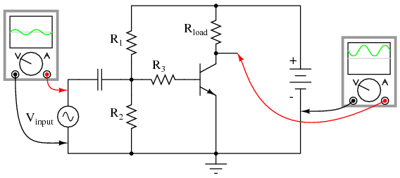
Common-emitter amplifier, no feedback, with reference waveforms for comparison.
Because the output is an inverted, or mirror-image, reproduction of the input signal, any connection between the output (collector) wire and the input (base) wire of the transistor in Figure below will result in negative feedback.
Negative feedback, collector feedback, decreases the output signal.
The resistances of R1, R2, R3, and Rfeedback function together as a signal-mixing network so that the voltage seen at the base of the transistor (with respect to ground) is a weighted average of the input voltage and the feedback voltage, resulting in signal of reduced amplitude going into the transistor. So, the amplifier circuit in Figure above will have reduced voltage gain, but improved linearity (reduced distortion) and increased bandwidth.
A resistor connecting collector to base is not the only way to introduce negative feedback into this amplifier circuit, though. Another method, although more difficult to understand at first, involves the placement of a resistor between the transistor's emitter terminal and circuit ground in Figure below.

Emitter feedback: A different method of introducing negative feedback into a circuit.
This new feedback resistor drops voltage proportional to the emitter current through the transistor, and it does so in such a way as to oppose the input signal's influence on the base-emitter junction of the transistor. Let's take a closer look at the emitter-base junction and see what difference this new resistor makes in Figure below.
With no feedback resistor connecting the emitter to ground in Figure below (a) , whatever level of input signal (Vinput) makes it through the coupling capacitor and R1/R2/R3 resistor network will be impressed directly across the base-emitter junction as the transistor's input voltage (VB-E). In other words, with no feedback resistor, VB-E equals Vinput. Therefore, if Vinput increases by 100 mV, then VB-E increases by 100 mV: a change in one is the same as a change in the other, since the two voltages are equal to each other.
Now let's consider the effects of inserting a resistor (Rfeedback) between the transistor's emitter lead and ground in Figure below (b).
|
|
(a) No feedback vs (b) emitter feedback. A waveform at the collector is inverted with respect to the base. At (b) the emitter waveform is in-phase (emitter follower) with base, out of phase with collector. Therefore, the emitter signal subtracts from the collector output signal.
Note how the voltage dropped across Rfeedback adds with VB-E to equal Vinput. With Rfeedback in the Vinput -- VB-E loop, VB-E will no longer be equal to Vinput. We know that Rfeedback will drop a voltage proportional to emitter current, which is in turn controlled by the base current, which is in turn controlled by the voltage dropped across the base-emitter junction of the transistor (VB-E). Thus, if Vinput were to increase in a positive direction, it would increase VB-E, causing more base current, causing more collector (load) current, causing more emitter current, and causing more feedback voltage to be dropped across Rfeedback. This increase of voltage drop across the feedback resistor, though, subtracts from Vinput to reduce the VB-E, so that the actual voltage increase for VB-E will be less than the voltage increase of Vinput. No longer will a 100 mV increase in Vinput result in a full 100 mV increase for VB-E, because the two voltages are not equal to each other.
Consequently, the input voltage has less control over the transistor than before, and the voltage gain for the amplifier is reduced: just what we expected from negative feedback.
In practical common-emitter circuits, negative feedback isn't just a luxury; its a necessity for stable operation. In a perfect world, we could build and operate a common-emitter transistor amplifier with no negative feedback, and have the full amplitude of Vinput impressed across the transistor's base-emitter junction. This would give us a large voltage gain. Unfortunately, though, the relationship between base-emitter voltage and base-emitter current changes with temperature, as predicted by the “diode equation.” As the transistor heats up, there will be less of a forward voltage drop across the base-emitter junction for any given current. This causes a problem for us, as the R1/R2 voltage divider network is designed to provide the correct quiescent current through the base of the transistor so that it will operate in whatever class of operation we desire (in this example, I've shown the amplifier working in class-A mode). If the transistor's voltage/current relationship changes with temperature, the amount of DC bias voltage necessary for the desired class of operation will change. A hot transistor will draw more bias current for the same amount of bias voltage, making it heat up even more, drawing even more bias current. The result, if unchecked, is called thermal runaway.
Common-collector amplifiers, (Figure below) however, do not suffer from thermal runaway. Why is this? The answer has everything to do with negative feedback.

Common collector (emitter follower) amplifier.
Note that the common-collector amplifier (Figure above) has its load resistor placed in exactly the same spot as we had the Rfeedback resistor in the last circuit in Figure above (b): between emitter and ground. This means that the only voltage impressed across the transistor's base-emitter junction is the difference between Vinput and Voutput, resulting in a very low voltage gain (usually close to 1 for a common-collector amplifier). Thermal runaway is impossible for this amplifier: if base current happens to increase due to transistor heating, emitter current will likewise increase, dropping more voltage across the load, which in turn subtracts from Vinput to reduce the amount of voltage dropped between base and emitter. In other words, the negative feedback afforded by placement of the load resistor makes the problem of thermal runaway self-correcting. In exchange for a greatly reduced voltage gain, we get superb stability and immunity from thermal runaway.
By adding a “feedback” resistor between emitter and ground in a common-emitter amplifier, we make the amplifier behave a little less like an “ideal” common-emitter and a little more like a common-collector. The feedback resistor value is typically quite a bit less than the load, minimizing the amount of negative feedback and keeping the voltage gain fairly high.
Another benefit of negative feedback, seen clearly in the common-collector circuit, is that it tends to make the voltage gain of the amplifier less dependent on the characteristics of the transistor. Note that in a common-collector amplifier, voltage gain is nearly equal to unity (1), regardless of the transistor's β. This means, among other things, that we could replace the transistor in a common-collector amplifier with one having a different β and not see any significant changes in voltage gain. In a common-emitter circuit, the voltage gain is highly dependent on β. If we were to replace the transistor in a common-emitter circuit with another of differing β, the voltage gain for the amplifier would change significantly. In a common-emitter amplifier equipped with negative feedback, the voltage gain will still be dependent upon transistor β to some degree, but not as much as before, making the circuit more predictable despite variations in transistor β.
The fact that we have to introduce negative feedback into a common-emitter amplifier to avoid thermal runaway is an unsatisfying solution. Is it possibe to avoid thermal runaway without having to suppress the amplifier's inherently high voltage gain? A best-of-both-worlds solution to this dilemma is available to us if we closely examine the problem: the voltage gain that we have to minimize in order to avoid thermal runaway is the DC voltage gain, not the AC voltage gain. After all, it isn't the AC input signal that fuels thermal runaway: its the DC bias voltage required for a certain class of operation: that quiescent DC signal that we use to “trick” the transistor (fundamentally a DC device) into amplifying an AC signal. We can suppress DC voltage gain in a common-emitter amplifier circuit without suppressing AC voltage gain if we figure out a way to make the negative feedback only function with DC. That is, if we only feed back an inverted DC signal from output to input, but not an inverted AC signal.
The Rfeedback emitter resistor provides negative feedback by dropping a voltage proportional to load current. In other words, negative feedback is accomplished by inserting an impedance into the emitter current path. If we want to feed back DC but not AC, we need an impedance that is high for DC but low for AC. What kind of circuit presents a high impedance to DC but a low impedance to AC? A high-pass filter, of course!
By connecting a capacitor in parallel with the feedback resistor in Figure below, we create the very situation we need: a path from emitter to ground that is easier for AC than it is for DC.
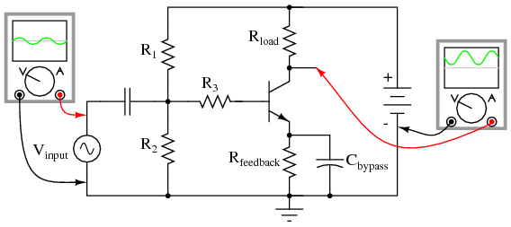
High AC voltage gain reestablished by adding Cbypass in parallel with Rfeedback
The new capacitor “bypasses” AC from the transistor's emitter to ground, so that no appreciable AC voltage will be dropped from emitter to ground to “feed back” to the input and suppress voltage gain. Direct current, on the other hand, cannot go through the bypass capacitor, and so must travel through the feedback resistor, dropping a DC voltage between emitter and ground which lowers the DC voltage gain and stabilizes the amplifier's DC response, preventing thermal runaway. Because we want the reactance of this capacitor (XC) to be as low as possible, Cbypass should be sized relatively large. Because the polarity across this capacitor will never change, it is safe to use a polarized (electrolytic) capacitor for the task.
Another approach to the problem of negative feedback reducing voltage gain is to use multi-stage amplifiers rather than single-transistor amplifiers. If the attenuated gain of a single transistor is insufficient for the task at hand, we can use more than one transistor to make up for the reduction caused by feedback. An example circuit showing negative feedback in a three-stage common-emitter amplifier is Figure below.
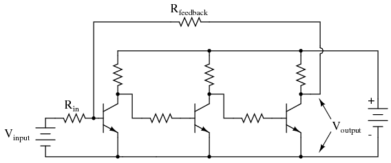
Feedback around an “odd” number of direct coupled stages produce negative feedback.
The feedback path from the final output to the input is through a single resistor, Rfeedback. Since each stage is a common-emitter amplifier (thus inverting), the odd number of stages from input to output will invert the output signal; the feedback will be negative (degenerative). Relatively large amounts of feedback may be used without sacrificing voltage gain, because the three amplifier stages provide much gain to begin with.
At first, this design philosophy may seem inelegant and perhaps even counter-productive. Isn't this a rather crude way to overcome the loss in gain incurred through the use of negative feedback, to simply recover gain by adding stage after stage? What is the point of creating a huge voltage gain using three transistor stages if we're just going to attenuate all that gain anyway with negative feedback? The point, though perhaps not apparent at first, is increased predictability and stability from the circuit as a whole. If the three transistor stages are designed to provide an arbitrarily high voltage gain (in the tens of thousands, or greater) with no feedback, it will be found that the addition of negative feedback causes the overall voltage gain to become less dependent of the individual stage gains, and approximately equal to the simple ratio Rfeedback/Rin. The more voltage gain the circuit has (without feedback), the more closely the voltage gain will approximate Rfeedback/Rin once feedback is established. In other words, voltage gain in this circuit is fixed by the values of two resistors, and nothing more.
This is an advantage for mass-production of electronic circuitry: if amplifiers of predictable gain may be constructed using transistors of widely varied β values, it eases the selection and replacement of components. It also means the amplifier's gain varies little with changes in temperature. This principle of stable gain control through a high-gain amplifier “tamed” by negative feedback is elevated almost to an art form in electronic circuits called operational amplifiers, or op-amps. You may read much more about these circuits in a later chapter of this book!
Input impedance varies considerably with the circuit configuration shown in Figure below. It also varies with biasing. Not considered here, the input impedance is complex and varies with frequency. For the common-emitter and common-collector it is base resistance times β. The base resistance can be both internal and external to the transistor. For the common-collector:
Rin = βREIt is a bit more complicated for the common-emitter circuit. We need to know the internal emitter resistance rEE. This is given by:
rEE = KT/IEm where: K=1.38×10-23 watt-sec/oC, Boltzman's constant T= temperature in Kelvins ≅300. IE = emitter current m = varies from 1 to 2 for Silicon RE ≅ 0.026V/IE = 26mV/IEThus, for the common-emitter circuit Rin is
Rin = βrEEAs an example the input resistance of a, β = 100, CE configuration biased at 1 mA is:
rEE = 26mV/1mA = 26Ω Rin = βrEE = 100(26) = 2600ΩMoreover, a more accurate Rin for the common-collector should have included rEE
Rin = β(RE + rEE)This equation (above) is also applicable to a common-emitter configuration with an emitter resistor.
Input impedance for the common-base configuration is Rin = rEE.
The high input impedance of the common-collector configuration matches high impedance sources. A crystal or ceramic microphone is one such high impedance source. The common-base arrangement is sometimes used in RF (radio frequency) circuits to match a low impedance source, for example, a 50 Ω coaxial cable feed. For moderate impedance sources, the common-emitter is a good match. An example is a dynamic microphone.
The output impedances of the three basic configurations are listed in Figure below. The moderate output impedance of the common-emitter configuration helps make it a popular choice for general use. The Low output impedance of the common-collector is put to good use in impedance matching, for example, tranformerless matching to a 4 Ohm speaker. There do not appear to be any simple formulas for the output impedances. However, R. Victor Jones develops expressions for output resistance. [RVJ]

Amplifier characteristics, adapted from GE Transistor Manual, Figure 1.21.[GET]
An often-used circuit applying the bipolar junction transistor is the so-called current mirror, which serves as a simple current regulator, supplying nearly constant current to a load over a wide range of load resistances.
We know that in a transistor operating in its active mode, collector current is equal to base current multiplied by the ratio β. We also know that the ratio between collector current and emitter current is called α. Because collector current is equal to base current multiplied by β, and emitter current is the sum of the base and collector currents, α should be mathematically derivable from β. If you do the algebra, you'll find that α = β/(β+1) for any transistor.
We've seen already how maintaining a constant base current through an active transistor results in the regulation of collector current, according to the β ratio. Well, the α ratio works similarly: if emitter current is held constant, collector current will remain at a stable, regulated value so long as the transistor has enough collector-to-emitter voltage drop to maintain it in its active mode. Therefore, if we have a way of holding emitter current constant through a transistor, the transistor will work to regulate collector current at a constant value.
Remember that the base-emitter junction of a BJT is nothing more than a PN junction, just like a diode, and that the “diode equation” specifies how much current will go through a PN junction given forward voltage drop and junction temperature:

If both junction voltage and temperature are held constant, then the PN junction current will be constant. Following this rationale, if we were to hold the base-emitter voltage of a transistor constant, then its emitter current will be constant, given a constant temperature. (Figure below)
Constant VBE gives constant IB, constant IE, and constant IC.
This constant emitter current, multiplied by a constant α ratio, gives a constant collector current through Rload, if enough battery voltage is available to keep the transistor in its active mode for any change in Rload's resistance.
To maintain a constant voltage across the transistor's base-emitter junction use a forward-biased diode to establish a constant voltage of approximately 0.7 volts, and connect it in parallel with the base-emitter junction as in Figure below.

Diode junction 0.7 V maintains constant base voltage, and constant base current.
The voltage dropped across the diode probably won't be 0.7 volts exactly. The exact amount of forward voltage dropped across it depends on the current through the diode, and the diode's temperature, all in accordance with the diode equation. If diode current is increased (say, by reducing the resistance of Rbias), its voltage drop will increase slightly, increasing the voltage drop across the transistor's base-emitter junction, which will increase the emitter current by the same proportion, assuming the diode's PN junction and the transistor's base-emitter junction are well-matched to each other. In other words, transistor emitter current will closely equal diode current at any given time. If you change the diode current by changing the resistance value of Rbias, then the transistor's emitter current will follow suit, because the emitter current is described by the same equation as the diode's, and both PN junctions experience the same voltage drop.
Remember, the transistor's collector current is almost equal to its emitter current, as the α ratio of a typical transistor is almost unity (1). If we have control over the transistor's emitter current by setting diode current with a simple resistor adjustment, then we likewise have control over the transistor's collector current. In other words, collector current mimics, or mirrors, diode current.
Current through resistor Rload is therefore a function of current set by the bias resistor, the two being nearly equal. This is the function of the current mirror circuit: to regulate current through the load resistor by conveniently adjusting the value of Rbias. Current through the diode is described by a simple equation: power supply voltage minus diode voltage (almost a constant value), divided by the resistance of Rbias.
To better match the characteristics of the two PN junctions (the diode junction and the transistor base-emitter junction), a transistor may be used in place of a regular diode, as in Figure below (a).
|
|
Current mirror circuits.
Because temperature is a factor in the “diode equation,” and we want the two PN junctions to behave identically under all operating conditions, we should maintain the two transistors at exactly the same temperature. This is easily done using discrete components by gluing the two transistor cases back-to-back. If the transistors are manufactured together on a single chip of silicon (as a so-called integrated circuit, or IC), the designers should locate the two transistors close to one another to facilitate heat transfer between them.
The current mirror circuit shown with two NPN transistors in Figure above (a) is sometimes called a current-sinking type, because the regulating transistor conducts current to the load from ground (“sinking” current), rather than from the positive side of the battery (“sourcing” current). If we wish to have a grounded load, and a current sourcing mirror circuit, we may use PNP transistors like Figure above (b).
While resistors can be manufactured in ICs, it is easier to fabricate transistors. IC designers avoid some resistors by replacing load resistors with current sources. A circuit like an operational amplifier built from discrete components will have a few transistors and many resistors. An integrated circuit version will have many transistors and a few resistors. In Figure below One voltage reference, Q1, drives multiple current sources: Q2, Q3, and Q4. If Q2 and Q3 are equal area transistors the load currents Iload will be equal. If we need a 2·Iload, parallel Q2 and Q3. Better yet fabricate one transistor, say Q3 with twice the area of Q2. Current I3 will then be twice I2. In other words, load current scales with transistor area.
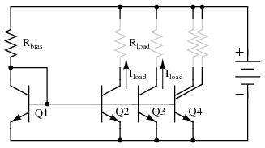
Multiple current mirrors may be slaved from a single (Q1 - Rbias) voltage source.
Note that it is customary to draw the base voltage line right through the transistor symbols for multiple current mirrors! Or in the case of Q4 in Figure above, two current sources are associated with a single transistor symbol. The load resistors are drawn almost invisible to emphasize the fact that these do not exist in most cases. The load is often another (multiple) transistor circuit, say a pair of emitters of a differential amplifier, for example Q3 and Q4 in "A simple operational amplifier", Ch 8 . Often, the collector load of a transistor is not a resistor but a current mirror. For example the collector load of Q4 collector , Ch 8 is a current mirror (Q2).
For an example of a current mirror with multiple collector outputs see Q13 in the model 741 op-amp , Ch 8 . The Q13 current mirror outputs substitute for resistors as collector loads for Q15 and Q17. We see from these examples that current mirrors are preferred as loads over resistors in integrated circuitry.
Like all electrical and electronic components, transistors are limited in the amounts of voltage and current each one can handle without sustaining damage. Since transistors are more complex than some of the other components you're used to seeing at this point, these tend to have more kinds of ratings. What follows is an itemized description of some typical transistor ratings.
Power dissipation: When a transistor conducts current between collector and emitter, it also drops voltage between those two points. At any given time, the power dissipated by a transistor is equal to the product (multiplication) of collector current and collector-emitter voltage. Just like resistors, transistors are rated for how many watts each can safely dissipate without sustaining damage. High temperature is the mortal enemy of all semiconductor devices, and bipolar transistors tend to be more susceptible to thermal damage than most. Power ratings are always referenced to the temperature of ambient (surrounding) air. When transistors are to be used in hotter environments (>25o, their power ratings must be derated to avoid a shortened service life.
Reverse voltages: As with diodes, bipolar transistors are rated for maximum allowable reverse-bias voltage across their PN junctions. This includes voltage ratings for the emitter-base junction VEB , collector-base junction VCB , and also from collector to emitter VCE .
VEB , the maximum reverse voltage from emitter to base is approximately 7 V for some small signal transistors. Some circuit designers use discrete BJTs as 7 V zener diodes with a series current limiting resistor. Transistor inputs to analog integrated circuits also have a VEB rating, which if exceeded will cause damage, no zenering of the inputs is allowed.
The rating for maximum collector-emitter voltage VCE can be thought of as the maximum voltage it can withstand while in full-cutoff mode (no base current). This rating is of particular importance when using a bipolar transistor as a switch. A typical value for a small signal transistor is 60 to 80 V. In power transistors, this could range to 1000 V, for example, a horizontal deflection transistor in a cathode ray tube display.
Collector current: A maximum value for collector current IC will be given by the manufacturer in amps. Typical values for small signal transistors are 10s to 100s of mA, 10s of A for power transistors. Understand that this maximum figure assumes a saturated state (minimum collector-emitter voltage drop). If the transistor is not saturated, and in fact is dropping substantial voltage between collector and emitter, the maximum power dissipation rating will probably be exceeded before the maximum collector current rating. Just something to keep in mind when designing a transistor circuit!
Saturation voltages: Ideally, a saturated transistor acts as a closed switch contact between collector and emitter, dropping zero voltage at full collector current. In reality this is never true. Manufacturers will specify the maximum voltage drop of a transistor at saturation, both between the collector and emitter, and also between base and emitter (forward voltage drop of that PN junction). Collector-emitter voltage drop at saturation is generally expected to be 0.3 volts or less, but this figure is of course dependent on the specific type of transistor. Low voltage transistors, low VCE , show lower saturation voltages. The saturation voltage is also lower for higher base drive current.
Base-emitter forward voltage drop, kVBE , is similar to that of an equivalent diode, ≅0.7 V, which should come as no surprise.
Beta: The ratio of collector current to base current, β is the fundamental parameter characterizing the amplifying ability of a bipolar transistor. β is usually assumed to be a constant figure in circuit calculations, but unfortunately this is far from true in practice. As such, manufacturers provide a set of β (or “hfe”) figures for a given transistor over a wide range of operating conditions, usually in the form of maximum/minimum/typical ratings. It may surprise you to see just how widely β can be expected to vary within normal operating limits. One popular small-signal transistor, the 2N3903, is advertised as having a β ranging from 15 to 150 depending on the amount of collector current. Generally, β is highest for medium collector currents, decreasing for very low and very high collector currents. hfe is small signal AC gain; hFE is large AC signal gain or DC gain.
Alpha: the ratio of collector current to emitter current, α=IC/IE . α may be derived from β, being α=β/(β+1) .
Bipolar transistors come in a wide variety of physical packages. Package type is primarily dependent upon the required power dissipation of the transistor, much like resistors: the greater the maximum power dissipation, the larger the device has to be to stay cool. Figure below shows several standardized package types for three-terminal semiconductor devices, any of which may be used to house a bipolar transistor. There are many other semiconductor devices other than bipolar transistors which have three connection points. Note that the pin-outs of plastic transistors can vary within a single package type, e.g. TO-92 in Figure below. It is impossible to positively identify a three-terminal semiconductor device without referencing the part number printed on it, or subjecting it to a set of electrical tests.

Transistor packages, dimensions in mm.
Small plastic transistor packages like the TO-92 can dissipate a few hundred milliwatts. The metal cans, TO-18 and TO-39 can dissipate more power, several hundred milliwatts. Plastic power transistor packages like the TO-220 and TO-247 dissipate well over 100 watts, approaching the dissipation of the all metal TO-3. The dissipation ratings listed in Figure above are the maximum ever encountered by the author for high powered devices. Most power transistors are rated at half or less than the listed wattage. Consult specific device datasheets for actual ratings. The semiconductor die in the TO-220 and TO-247 plastic packages is mounted to a heat conductive metal slug which transfers heat from the back of the package to a metal heatsink, not shown. A thin coating of thermally conductive grease is applied to the metal before mounting the transistor to the heatsink. Since the TO-220 and TO-247 slugs, and the TO-3 case are connected to the collector, it is sometimes necessary to electrically isolate these from a grounded heatsink by an interposed mica or polymer washer. The datasheet ratings for the power packages are only valid when mounted to a heatsink. Without a heatsink, a TO-220 dissipates approximately 1 watt safely in free air.
Datasheet maximum power disipation ratings are difficult to acheive in practice. The maximum power dissipation is based on a heatsink maintaining the transistor case at no more than 25oC. This is difficult with an air cooled heatsink. The allowable power dissipation decreases with increasing temperature. This is known as derating. Many power device datasheets include a dissipation versus case termperaure graph.
An ideal transistor would show 0% distortion in amplifying a signal. Its gain would extend to all frequencies. It would control hundreds of amperes of current, at hundreds of degrees C. In practice, available devices show distortion. Amplification is limited at the high frequency end of the spectrum. Real parts only handle tens of amperes with precautions. Care must be taken when paralleling transistors for higher current. Operation at elevated temperatures can destroy transistors if precautions are not taken.
The class A common-emitter amplifier (similar to Figure previous)is driven almost to clipping in Figure below . Note that the positive peak is flatter than the negative peaks. This distortion is unacceptable in many applications like high-fidelity audio.

Distortion in large signal common-emitter amplifier.
Small signal amplifiers are relatively linear because they use a small linear section of the transistor characteristics. Large signal amplifiers are not 100% linear because transistor characteristics like β are not constant, but vary with collector current. β is high at low collector current, and low at very low current or high current. Though, we primarily encounter decreasing β with increasing collector current.
common-emitter amplifier Vbias 4 0 0.74 Vsig 5 4 sin (0 125m 2000 0 0) rbias 6 5 2k q1 2 6 0 q2n2222 r 3 2 1000 v1 3 0 dc 10 .model q2n2222 npn (is=19f bf=150 + vaf=100 ikf=0.18 ise=50p ne=2.5 + br=7.5 + var=6.4 ikr=12m isc=8.7p nc=1.2 + rb=50 + re=0.4 rc=0.3 cje=26p tf=0.5n + cjc=11p tr=7n xtb=1.5 kf=0.032f + af=1) .fourier 2000 v(2) .tran 0.02m 0.74m .end |
spice -b ce.cir Fourier analysis v(2): THD: 10.4688 % Har Freq Norm Mag --- ---- -------- 0 0 0 1 2000 1 2 4000 0.097992 3 6000 0.036541 4 8000 0.004387 5 10000 0.001158 6 12000 0.000893 7 14000 0.000211 8 16000 3.81e-05 9 18000 3.37e-05 |
SPICE net list: for transient and fourier analyses. Fourier analysis shows 10% total harmonic distortion (THD).
The SPICE listing in Table above illustrates how to quantify the amount of distortion. The ".fourier 2000 v(2)" command tells SPICE to perm a fourier analysis at 2000 Hz on the output v(2). At the command line "spice -b circuitname.cir" produces the Fourier analysis output in Table above. It shows THD (total harmonic distortion) of over 10%, and the contribution of the individual harmonics.
A partial solution to this distortion is to decrease the collector current or operate the amplifier over a smaller portion of the load line. The ultimate solution is to apply negative feedback. See Feedback.
Temperature affects the AC and DC characteristics of transistors. The two aspects to this problem are environmental temperature variation and self-heating. Some applications, like military and automotive, require operation over an extended temperature range. Circuits in a benign environment are subject to self-heating, in particular high power circuits.
Leakage current ICO and β increase with temperature. The DC β hFE increases exponentially. The AC β hfe increases, but not as rapidly. It doubles over the range of -55o to 85o C. As temperature increases, the increase in hfe will yield a larger common-emitter output, which could be clipped in extreme cases. The increase in hFE shifts the bias point, possibly clipping one peak. The shift in bias point is amplified in multi-stage direct-coupled amplifiers. The solution is some form of negative feedback to stabilize the bias point. This also stabilizes AC gain.
Increasing temperature in Figure below (a) will decrease VBE from the nominal 0.7V for silicon transistors. Decreasing VBE increases collector current in a common-emitter amplifier, further shifting the bias point. The cure for shifting VBE is a pair of transistors configured as a differential amplifier. If both transistors in Figure below (b) are at the same temperature, the VBE will track with changing temperature and cancel.

(a) single ended CE amplifier vs (b) differential amplifier with VBE cancellation.
The maximum recommended junction temperature for silicon devices is frequently 125o C. Though, this should be derated for higher reliability. Transistor action ceases beyond 150o C. Silicon carbide and diamond transistors will operate considerably higher.
The problem with increasing temperature causing increasing collector current is that more current increase the power dissipated by the transistor which, in turn, increases its temperature. This self-reinforcing cycle is known as thermal run away, which may destroy the transistor. Again, the solution is a bias scheme with some form of negative feedback to stabilize the bias point.
Capacitance exists between the terminals of a transistor. The collector-base capacitance CCB and emitter-base capacitance CEB decrease the gain of a common emitter circuit at higher frequencies.
In a common emitter amplifier, the capacitive feedback from collector to base effectively multiplies CCB by β. The amount of negative gain-reducing feedback is related to both current gain, and amount of collector-base capacitance. This is known as the Miller effect, Miller effect.
The ultimate sensitivity of small signal amplifiers is limited by noise due to random variations in current flow. The two major sources of noise in transistors are shot noise due to current flow of carriers in the base and thermal noise. The source of thermal noise is device resistance and increases with temperature:
Noise in a transistor amplifier is defined in terms of excess noise generated by the amplifier, not that noise amplified from input to output, but that generated within the amplifier. This is determined by measuring the signal to noise ratio (S/N) at the amplifier input and output. The AC voltage output of an amplifier with a small signal input corresponds to S+N, signal plus noise. The AC voltage with no signal in corresponds to noise N. The noise figure F is defined in terms of S/N of amplifier input and output:

The noise figure F for RF (radio frequency) transistors is usually listed on transistor data sheets in decibels, FdB. A good VHF (very high frequency, 30 MHz to 300 Mhz) noise figure is < 1 dB. The noise figure above VHF increases considerable, 20 dB per decade as shown in Figure below.
Small signal transistor noise figure vs Frequency. After Thiele, Figure 11.147 [AGT]
Figure above also shows that noise at low frequencies increases at 10 dB per decade with decreasing frequency. This noise is known as 1/f noise.
Noise figure varies with the transistor type (part number). Small signal RF transistors used at the antenna input of a radio receiver are specifically designed for low noise figure. Noise figure varies with bias current and impedance matching. The best noise figure for a transistor is achieved at lower bias current, and possibly with an impedance mismatch.
If two identical power transistors were paralleled for higher current, one would expect them to share current equally. Because of differences in characteristerics, transistors do not share current equally.

Transistors paralleled for increased power require emitter ballast resistors
It is not practical to select identical transistors. The β for small signal transistors typically has a range of 100-300, power transistors: 20-50. If each one could be matched, one still might run hotter than the other due to environmental conditions. The hotter transistor draws more current resulting in thermal runaway. The solution when paralleling bipolar transistors is to insert emitter resistors known as ballast resistors of less than an ohm. If the hotter transistor draws more current, the voltage drop across the ballast resistor increases— negative feedback. This decreases the current. Mounting all transistors on the same heatsink helps equalize current too.
The performance of a transistor amplifier is relatively constant, up to a point, as shown by the small signal common-emitter current gain with increasing frequency in Figure below. Beyond that point the performance of a transistor degrades as frequency increases.
Beta cutoff frequency, fT is the frequency at which common-emitter small signal current gain (hfe) falls to unity. (Figure below) A practical amplifier must have a gain >1. Thus, a transistor cannot be used in a practical amplifier at fT. A more usable limit for a transistor is 0.1·fT.
Common-emitter small signal current gain (hfe) vs frequency.
Some RF silicon bipolar transistors are usable as amplifers up to a few GHz. Silicon-germanium devices extend the upper range to 10 GHz.
Alpha cutoff frequency, falpha is the frequency at which the α falls to 0.707 of low frequency α,0 α=0.707α0. Alpha cutoff and beta cutoff are nearly equal: falpha≅fT Beta cutoff fT is the preferred figure of merit of high frequency performance.
fmax is the highest frequency of oscillation possible under the most favorable conditions of bias and impedance matching. It is the frequency at which the power gain is unity. All of the output is fed back to the input to sustain oscillations. fmax is an upper limit for frequency of operation of a transistor as an active device. Though, a practical amplifier would not be usable at fmax.
Miller effect: The high frequency limit for a transistor is related to the junction capacitances. For example a PN2222A has an input capacitance Cobo=9pF and an output capacitance Cibo=25pF from C-B and E-B respectively. [FAR] Although the C-E capacitance of 25 pF seems large, it is less of a factor than the C-B (9pF) capacitance. because of the Miller effect, the C-B capacitance has an effect on the base equivalent to beta times the capacitance in the common-emitter amplifier. Why might this be? A common-emitter amplifier inverts the signal from base to collector. The inverted collector signal fed back to the base opposes the input on the base. The collector signal is beta times larger than the input. For the PN2222A, β=50–300. Thus, the 9pF C-E capacitance looks like 9·50=450pF to 9·300=2700pF.
The solution to the junction capacitance problem is to select a high frequency transistor for wide bandwidth applications— RF (radio frequency) or microwave transistor. The bandwidth can be extended further by using the common-base instead of the common-emitter configuration. The grounded base shields the emitter input from capacitive collector feedback. A two-transistor cascode arrangement will yield the same bandwidth as the common-base, with the higher input impedance of the common-emitter.
Lessons In Electric Circuits copyright (C) 2000-2023 Tony R. Kuphaldt, under the terms and conditions of the CC BY License.


{kind=link}
{kind=link}
{kind=link}
{kind=link}
{kind=link}
{kind=link}
{kind=link}
{kind=link}
{kind=link}
{kind=link}
{kind=link}
{kind=link}
{kind=link}
{kind=link}
{kind=link}
{kind=link}
{kind=link}
{kind=link}
{kind=link}
{kind=link}
{kind=link}
{kind=link}
{kind=link}
{kind=link}
{kind=link}
{kind=link}
{kind=link}
{kind=link}
{kind=link}
{kind=link}
{kind=link}
{kind=link}
{kind=link}
{kind=link}
{kind=link}
{kind=link}
{kind=link}
{kind=link}
{kind=link}
{kind=link}
{kind=link}
{kind=link}
{kind=link}
{kind=link}
{kind=link}
{kind=link}
{kind=link}
{kind=link}
{kind=link}
{kind=link}
{kind=link}
{kind=link}
{kind=link}
{kind=link}
{kind=link}
{kind=link}
{kind=link}
{kind=link}
{kind=link}
{kind=link}
{kind=link}
{kind=link}
{kind=link}
{kind=link}
{kind=link}
{kind=link}
{kind=link}
{kind=link}
{kind=link}
{kind=link}
{kind=link}
{kind=link}
{kind=link}
{kind=link}
{kind=link}
{kind=link}
{kind=link}
{kind=link}
{kind=link}
{kind=link}
{kind=link}
{kind=link}
{kind=link}
{kind=link}
{kind=link}
{kind=link}
{kind=link}
{kind=link}
{kind=link}
{kind=link}
{kind=link}
{kind=link}
{kind=link}
{kind=link}
{kind=link}
{kind=link}
{kind=link}
{kind=link}
{kind=link}
{kind=link}
{kind=link}
{kind=link}
{kind=link}
{kind=link}
{kind=link}
{kind=link}
{kind=link}
{kind=link}
{kind=link}
{kind=link}
{kind=link}
{kind=link}
{kind=link}
{kind=link}
{kind=link}
{kind=link}
{kind=link}
{kind=link}